Step-by-step Workflow
This vignette runs through a step-by-step workflow to visualise trait
dispersion and assess species invasiveness and site invasibility. It
begins with how to install and load
invasimapr and outlines the
(pre-)requisites for running the full workflow.
Setup
Install and load invasimapr
*Install** and load the invasimapr package from GitHub,
ensuring all functions are available for use in the workflow.
# install.packages("remotes")
# remotes::install_github("b-cubed-eu/invasimapr")
# If invasimapr is on CRAN:
# install.packages("invasimapr")*Load** the invasimapr package:
library(invasimapr)
# Optional: report package version
packageVersion("invasimapr")
#> [1] '0.1.0'
# Make sure all the functions are loaded
# devtools::load_all() # alternative during local developmentLoad other R libraries
Load core libraries for spatial processing, biodiversity modelling,
and visualization required across the invasimapr analysis
pipeline.
The workflow typically uses packages for:
- data manipulation (
dplyr,tidyr,purrr,tibble,stringr) - modelling (
glmmTMB,performance,MASS,glmnet,Matrix) - multivariate methods (
vegan,cluster) - spatial analysis (
sf) - visualisation (
ggplot2,viridis,pheatmap,factoextra)
For robust docs builds, we recommend not attaching
large dependency sets with library() unless you will use
them in this vignette. Instead, downstream vignettes should load what
they need, and you can rely on pkg::fun() where
practical.
Below is a light “availability check” that does not install anything.
# # Load essential packages
# suppressPackageStartupMessages({
# need = c("dplyr","tidyr","purrr","tibble","stringr","ggplot2","Matrix","glmnet","rlang", "glmmTMB",
# "performance", "vegan", "cluster", "matrixStats", "sf", "MASS", "factoextra", "viridis", "pheatmap")
# to_install = need[!sapply(need, requireNamespace, quietly = TRUE)]
# if (length(to_install)) install.packages(to_install)
# lapply(need, library, character.only = TRUE)
# })
deps = c(
# Core workflow
"dplyr","tidyr","purrr","tibble","stringr",
"ggplot2",
# Modelling / stats
"glmmTMB","performance","Matrix","glmnet","MASS","vegan","cluster","matrixStats",
# Spatial
"sf",
# Viz helpers used in later steps
"viridis","pheatmap","factoextra"
)
is_installed = vapply(deps, requireNamespace, logical(1), quietly = TRUE)
missing = deps[!is_installed]
cat("### Dependency check\n\n")
if (length(missing) == 0) {
cat("- All recommended packages are available.\n")
} else {
cat("- Missing packages (install before running the full workflow):\n")
cat(paste0(" - ", missing, collapse = "\n"), "\n")
}Data access and preparation
Data access and preparation using dissmapr
To acquire and prepare species occurrence data for biodiversity
modelling using the dissmapr package, a series of modular
functions streamline the workflow from raw observations to spatially
aligned environmental predictors.
Install dissmapr
Install and load the dissmapr package from GitHub,
ensuring all functions are available for use in the workflow.
# # Install remotes if needed
# install.packages("remotes")
# remotes::install_github("b-cubed-eu/dissmapr")
# Ensure the package is loaded
library(dissmapr)
sessionInfo()$otherPkgs$dissmapr$Version
#> [1] "0.1.0"Import and harmonise biodiversity-occurrence data
The process begins with dissmapr::get_occurrence_data(),
which imports biodiversity records, such as a GBIF butterfly dataset for
South Africa, and harmonizes them into standardised formats. Input
sources can include local CSV files, URLs, or zipped GBIF downloads. The
function filters data by taxon and region, returning both raw records
and site × species matrices in presence-absence or abundance form.
# Use local GBIF data
bfly_data = dissmapr::get_occurrence_data(
data = system.file("extdata", "gbif_butterflies.csv", package = "invasimapr"),
source_type = "local_csv",
sep = "\t"
)
# Check results but only a subset of columns to fit in console
dim(bfly_data)
# str(bfly_data[,c(51,52,22,23,1,14,16,17,30)])
head(bfly_data[, c(51, 52, 22, 23, 1, 14, 16, 17, 30)])Format biodiversity records to long/wide formats
Next, dissmapr::format_df()
restructures the raw records into tidy long and wide formats. This
assigns unique site IDs, extracts key fields (coordinates, species
names, observation values), and prepares two main outputs:
site_obs (long format for mapping) and
site_spp (wide format for species-level analysis).
# Continue from GBIF data
bfly_result = dissmapr::format_df(
data = bfly_data, # A `data.frame` of biodiversity records
species_col = "verbatimScientificName", # Name of species column (required for `"long"`)
value_col = "pa", # Name of value column (e.g. presence/abundance; for `"long"`)
extra_cols = NULL, # Character vector of other columns to keep
format = "long" # Either`"long"` or `"wide"`
)
# Check `bfly_result` structure
str(bfly_result, max.level = 1)
# Optional: Create new objects from list items
site_obs = bfly_result$site_obs
site_spp = bfly_result$site_spp
# Check results
dim(site_obs)
head(site_obs)
dim(site_spp)
head(site_spp[, 1:6])
#### Get parameters from processed data to use later
# Number of species
(n_sp = dim(site_spp)[2] - 3)
# Species names
sp_cols = names(site_spp)[-c(1:3)]
sp_cols[1:10]Generate spatial grid and gridded summaries
To integrate the data spatially, dissmapr::generate_grid()
overlays a user-defined spatial lattice (e.g. 0.5° grid), aggregates
biodiversity observations per grid cell, and computes standardised
metrics such as species richness and observation effort. Outputs include
gridded species matrices (grid_spp,
grid_spp_pa), a spatial polygon (grid_sf), and
raster layers (grid_r), enabling downstream spatial
modelling.
# Load the national boundary
rsa = sf::st_read(system.file("extdata", "rsa.shp", package = "invasimapr"))
# Choose a working resolution
res = 0.5 # decimal degrees° (≈ 55 km at the equator)
# Convert the AoI to a 'terra' vector
rsa_vect = terra::vect(rsa)
# Initialise a blank raster template
grid = terra::rast(rsa_vect, resolution = res, crs = terra::crs(rsa_vect))
# Populate the raster with placeholder values
terra::values(grid) = 1
# Clip the raster to the AoI
grid_masked = terra::mask(grid, rsa_vect)
# Generate a 0.5° grid summary for the point dataset `site_spp`
grid_list = dissmapr::generate_grid(
data = site_spp, # point data with x/y + species columns
x_col = "x", # longitude column
y_col = "y", # latitude column
grid_size = 0.5, # cell size in degrees
sum_cols = 4:ncol(site_spp), # columns to aggregate * could also use `names(site_spp)[4:ncol(site_spp)]`
crs_epsg = 4326 # WGS84
)
# Inspect the returned list
str(grid_list, max.level = 1)
# (Optional) Promote list items to named objects
grid_r = grid_list$grid_r$grid_id # raster
grid_sf = grid_list$grid_sf # polygons for mapping or joins
grid_spp = grid_list$grid_spp # tabular summary per cell
grid_spp_pa = grid_list$grid_spp_pa # presence/absence summary
# Quick checks
dim(grid_sf) # ; head(grid_sf)
dim(grid_spp) # ; head(grid_spp[, 1:8])
dim(grid_spp_pa) # ; head(grid_spp_pa[, 1:8])Visualise species richness per grid cell
Plot square root transformed sampling effort and species richness, in
a 1x2 side by side. Each map uses the viridisLite::turbo
palette and is overlaid with the study area outline for spatial
context.
# ensure terra methods are used
# library(terra)
# Get a 2-layer SpatRaster for obs_sum & spp_rich, regardless of source structure
r = grid_list$grid_r
if (inherits(r, "SpatRaster")) {
effRich_r = r[[c("obs_sum", "spp_rich")]]
} else if (is.list(r)) {
# r is a list of single-layer SpatRasters named 'obs_sum' and 'spp_rich'
effRich_r = rast(list(r[["obs_sum"]], r[["spp_rich"]]))
} else {
stop("grid_list$grid_r must be a SpatRaster or a list of SpatRaster layers")
}
# transform
effRich_r = sqrt(effRich_r)
# Open a 1×2 layout and plot each layer + outline
old_par = par(mfrow = c(1, 2), mar = c(1, 1, 1, 2))
on.exit(par(old_par), add = TRUE)
for (i in 1:2) {
terra::plot(effRich_r[[i]],
col = viridisLite::turbo(100),
colNA = NA,
axes = FALSE,
main = c("Sampling effort (√obs count)",
"Species richness (√unique count)")[i],
cex.main = 0.8
)
terra::plot(terra::vect(rsa), add = TRUE, border = "black", lwd = 0.4)
}:chart_with_upwards_trend: Figure 3: Spatial distribution of sampling effort and species richness across the study area. Each grid cell shows the square root–transformed values for (left) total observation counts (sampling effort) and (right) unique species counts (species richness). Both maps use the
viridisLite::turbocolor palette for comparability and are overlaid with the study area outline to provide spatial context.
Retrieve, crop, resample, and link environmental rasters to sampling sites
Environmental predictors are appended using dissmapr::get_enviro_data(),
which buffers the grid, downloads raster data (e.g. WorldClim
bioclimatic variables), resamples it, and links values to grid-cell
centroids. This produces both a site × environment data frame
(env_df) and a SpatRaster object (env_r),
aligning biological and environmental data.
Begin by reading in a predefined target species list, then filter a
site × species dataset (grid_spp) to retain only relevant
species observations, and reshape the data for further analysis. This
produces both a filtered long-format dataset (grid_obs) and
a cleaned wide-format site × species matrix (grid_spp).
# Read in target species list
species = read.csv(system.file("extdata",
"rsa_butterfly_species_names_n27_100plus.csv",
package = "invasimapr"
), stringsAsFactors = FALSE)$species
# Filter `grid_spp` and convert to long-format
grid_obs = grid_spp |>
dplyr::select(-mapsheet) |> # Drop mapsheet metadata
tidyr::pivot_longer(
cols = -c(grid_id, centroid_lon, centroid_lat, obs_sum, spp_rich), # Keep core metadata columns only
names_to = "species",
values_to = "count",
values_drop_na = TRUE
) |>
dplyr::filter(
# obs_sum > 100, # Only high-observation sites
count > 0,# Remove absent species
.data$species %in% .env$species# Keep only target species
) |>
dplyr::rename(
site_id = grid_id, # Change 'grid_id' to 'site_id'
x = centroid_lon, # Change 'centroid_lon' to 'x'
y = centroid_lat # Change 'centroid_lat' to 'y'
) |>
dplyr::relocate(site_id, x, y, obs_sum, spp_rich, species, count)
dim(grid_obs)
head(grid_obs)
length(unique(grid_obs$species))
length(unique(grid_obs$site))
# Reshape site-by-species matrix to wide format and clean
grid_spp = grid_obs |>
tidyr::pivot_wider(
names_from = species,
values_from = count,
values_fill = 0 # Replace missing counts with 0
)
dim(grid_spp)
# head(grid_spp)Then proceed to retrieve and process environmental
data using dissmapr::get_enviro_data().
In the example below, 19 bioclimatic variables are downloaded from
WorldClim v2.1 (≈10 km resolution) for all site centroids in the
grid_spp dataset. It performs the following steps:
- Retrieves WorldClim “bio” variables via the
geodatainterface. - Buffers the area of interest (AOI) by 10 km.
- Retains site-level metadata (
obs_sum,spp_rich) and excludes species columns.
# Retrieve 19 bioclim layers (≈10-km, WorldClim v2.1) for all grid centroids
data_path = "inst/extdata" # cache folder for rasters
enviro_list = dissmapr::get_enviro_data(
data = grid_spp, # centroids + obs_sum + spp_rich
buffer_km = 10, # pad the AOI slightly
source = "geodata", # WorldClim/SoilGrids interface
var = "bio", # bioclim variable set
res = 5, # 5-arc-min ≈ 10 km
grid_r = grid_r, # To set resampling resolution, if necessary
path = data_path,
sp_cols = 7:ncol(grid_spp), # ignore species columns
ext_cols = c("obs_sum", "spp_rich") # carry effort & richness through
)
# Quick checks
str(enviro_list, max.level = 1)
# (Optional) Assign concise layer names for readability
# Find names here https://www.worldclim.org/data/bioclim.html
names_env = c(
"temp_mean", "mdr", "iso", "temp_sea", "temp_max", "temp_min",
"temp_range", "temp_wetQ", "temp_dryQ", "temp_warmQ",
"temp_coldQ", "rain_mean", "rain_wet", "rain_dry",
"rain_sea", "rain_wetQ", "rain_dryQ", "rain_warmQ", "rain_coldQ"
)
names(enviro_list$env_rast) = names_env
# (Optional) Promote frequently-used objects
env_r = enviro_list$env_rast # cropped climate stack
env_df = enviro_list$env_df # site × environment data-frame
# Quick checks
env_r
dim(env_df)
head(env_df)
# Build the final site × environment table
grid_env = env_df |>
dplyr::select(
site_id, x, y,
obs_sum, spp_rich, dplyr::everything()
) |>
dplyr::mutate(across(
.cols = -c(site_id, x, y, obs_sum, spp_rich), # all other columns
.fns = ~ as.numeric(scale(.x)), # Scale bio
.names = "{.col}" # keep same names
))
str(grid_env, max.level = 1)
head(grid_env)Remove highly correlated predictors (Optional)
Finally, dissmapr::rm_correlated()
optionally reduces multicollinearity by filtering out highly correlated
predictors based on a threshold (e.g. r > 0.70), improving model
stability and interpretability. Together, these functions provide a
reproducible and scalable pipeline for preparing ecological datasets for
spatial analysis.
# # (Optional) Rename BIO
# names(env_df) = c("grid_id", "centroid_lon", "centroid_lat", names_env, "obs_sum", "spp_rich")
#
# # Run the filter and compare dimensions
# # Filter environmental predictors for |r| > 0.70
# env_vars_reduced = dissmapr::rm_correlated(
# data = env_df[, 4:23], # drop ID + coord columns
# cols = NULL, # infer all numeric cols
# threshold = 0.70,
# plot = TRUE # show heat-map of retained vars
# )
#
# # Before vs after
# c(original = ncol(env_df[, c(4, 6:24)]),
# reduced = ncol(env_vars_reduced))Data access and preparation using invasimapr
This section sets up data needed by all downstream wrappers: site locations, environmental covariates, resident community matrices, and species traits. It also shows how to enrich traits with metadata, and how to simulate invader trait tables for later steps.
Retrieve and link trait and metadata for each species
get_trait_data() provides an automated pipeline for
extracting and joining both biological trait data and rich metadata for
any focal species. Many analyses benefit from curated trait columns,
short taxonomy summaries, and links to images.
get_trait_data() consolidates these per species from local
trait tables and optional online sources, returning a single tidy row
per species for frictionless joins.
:hourglass_flowing_sand: What it does: Given a species name, the function looks up traits in a local table (or TRY-style database), performs tolerant name matching, optionally scrapes a short Wikipedia description and taxonomy, and can extract a compact image-based colour palette for visual summaries, as follows:
- Trait Table Lookup: Retrieves species’ trait data from a local trait table (CSV) or a TRY (Kattge et al 2020) style database, using fuzzy matching to ensure robust linkage even when there are minor naming inconsistencies.
- Wikipedia Metadata Scraping: Optionally augments each species entry with a taxonomic summary, higher taxonomy, and representative images scraped directly from Wikipedia.
- Image-based Color Palette Extraction: If enabled, downloads and processes public domain images to extract the most frequent colors, optionally removing green/white backgrounds to focus on diagnostic features.
- Flexible Output: Returns a single-row tibble with the species name, trait data, taxonomic metadata, image URL, and color palette - all harmonized for downstream analyses or visualization.
:information_source: Why this matters: Having a consistent, analysis-ready trait table avoids downstream NA cascades, eases plotting, and ensures that residents and invaders share identical column definitions.
:warning: Practical checks and tips: Keep resident and invader trait column names identical; prefer factors for categorical traits with explicit levels; store provenance for any scraped fields for reproducibility.
# Fetch local trait data.frame
btfly_traits = read.csv(system.file("extdata", "species_traits.csv", package = "invasimapr"))
str(btfly_traits)
#> 'data.frame': 27 obs. of 21 variables:
#> $ species : chr "Acraea horta" "Amata cerbera" "Bicyclus safitza safitza" "Cacyreus lingeus" ...
#> $ trait_cont1 : num 0.83 0.874 -0.428 0.661 0.283 ...
#> $ trait_cont2 : num 0.811 -0.106 0.672 0.475 0.622 ...
#> $ trait_cont3 : num -0.922 0.498 0.355 -0.657 -0.478 ...
#> $ trait_cont4 : num -0.684 -0.282 0.291 0.552 0.127 ...
#> $ trait_cont5 : num 0.0715 -0.9955 0.2179 0.6736 0.503 ...
#> $ trait_cont6 : num 0.16 0.643 -0.773 0.529 0.247 ...
#> $ trait_cont7 : num 0.2035 -0.606 0.0705 -0.6409 -0.0962 ...
#> $ trait_cont8 : num -0.425 -0.611 0.568 -0.742 -0.742 ...
#> $ trait_cont9 : num 0.1493 -0.2933 0.0949 0.7854 -0.02 ...
#> $ trait_cont10: num -0.5772 0.0992 -0.036 -0.6811 -0.7008 ...
#> $ trait_cat11 : chr "wetland" "forest" "wetland" "wetland" ...
#> $ trait_cat12 : chr "diurnal" "nocturnal" "diurnal" "nocturnal" ...
#> $ trait_cat13 : chr "bivoltine" "multivoltine" "univoltine" "multivoltine" ...
#> $ trait_cat14 : chr "detritivore" "detritivore" "generalist" "nectarivore" ...
#> $ trait_cat15 : chr "migratory" "resident" "resident" "migratory" ...
#> $ trait_ord16 : int 4 1 4 3 4 1 1 4 1 1 ...
#> $ trait_ord17 : int 1 4 4 3 2 4 3 5 4 3 ...
#> $ trait_bin18 : int 1 1 1 0 1 1 1 1 0 0 ...
#> $ trait_bin19 : int 1 0 1 0 0 1 1 1 0 1 ...
#> $ trait_ord20 : chr "medium" "large" "medium" "medium" ...
# Retrieve and join trait/metadata for all species in the observation set
spp_traits = purrr::map_dfr(
unique(grid_obs$species), # unique(longDF$species),
~ get_trait_data(
species = .x,
n_palette = 5,
preview = FALSE,
do_summary = TRUE,
do_taxonomy = TRUE,
do_image = TRUE,
do_palette = TRUE,
local_trait_df = btfly_traits,
local_species_col = "species",
max_dist = 1
)
)
# The final output combines trait data, taxonomic info, Wikipedia summary, images, and color palette for each species.
# This integrated dataset supports multi-faceted biodiversity, trait, and visualization analyses.
# Check output
str(spp_traits, 1)
#> tibble [27 × 29] (S3: tbl_df/tbl/data.frame)
head(spp_traits[1:5,1:5])
#> # A tibble: 5 × 5
#> species summary Kingdom Phylum Class
#> <chr> <chr> <chr> <chr> <chr>
#> 1 Utetheisa pulchella Utetheisa pulchella, the crim… Animal… Arthr… Inse…
#> 2 Danaus chrysippus orientis NA NA NA NA
#> 3 Telchinia serena Acraea serena, the dancing ac… Animal… Arthr… Inse…
#> 4 Vanessa cardui Vanessa cardui is the most wi… Animal… Arthr… Inse…
#> 5 Hypolimnas misippus Hypolimnas misippus, the Dana… Animal… Arthr… Inse…Alternatively, load a local combined site-environment-trait file
If you already maintain a single long file that includes sites,
coordinates, species, counts, environment, and traits, you can start
directly from that structure and let prepare_inputs() parse
columns by prefixes.
:hourglass_flowing_sand: What it does: This code
reads a demo CSV, selects canonical columns, coerces character fields to
factors, and renames the site identifier. The resulting
longDF feeds straight into the wrapper.
:information_source: Why this matters: A single schema keeps alignment errors low and simplifies lineage tracking for each variable class.
:warning: Practical checks and tips: Use stable
prefixes like env_* and trait_*; keep
site, x, y, species,
and count present and well-typed.
# Example data (invasimapr demo)
site_env_spp = read.csv(
system.file("extdata","site_env_spp_simulated.csv", package = "invasimapr")
)
# Long format
longDF = site_env_spp |>
dplyr::select(site_id, x, y, species, count,
dplyr::starts_with("env"),
dplyr::starts_with("trait_")) |>
dplyr::mutate(across(where(is.character), as.factor))
colnames(longDF)[colnames(longDF) == "site_id"] = "site"
head(longDF[1:5,1:5])
#> site x y species count
#> 1 1026 28.75 -22.25004 Acraea horta 10
#> 2 1026 28.75 -22.25004 Amata cerbera 0
#> 3 1026 28.75 -22.25004 Bicyclus safitza safitza 0
#> 4 1026 28.75 -22.25004 Cacyreus lingeus 0
#> 5 1026 28.75 -22.25004 Charaxes wakefieldi 9Import separate tables (Optional)
# # site_df = read.csv('D:/Data/Simulations/env_sites_t0.csv')[,1:3]
# site_df = read.csv('D:/Data/Simulations/env_sites_t0_v2.csv')[,1:3]
# # head(site_df)
# dim(site_df)
#
# # env_df = read.csv('D:/Data/Simulations/env_sites_t0.csv')[,-c(4:5)]
# env_df = read.csv('D:/Data/Simulations/env_sites_t0_v2.csv')[,-c(4:5)]
# # head(env_df)
# dim(env_df)
#
# # comm_res = read.csv('D:/Data/Simulations/community_t0.csv')
# comm_res = read.csv('D:/Data/Simulations/community_t0_v2.csv')
# # head(comm_res)
# dim(comm_res)
#
# # traits_res = read.csv('D:/Data/Simulations/species_traits_t0.csv')
# traits_res = read.csv('D:/Data/Simulations/species_traits_t0_v2.csv')
# # head(traits_res)
# dim(traits_res)Prepare residents’ community data with
prepare_inputs()
prepare_inputs() assembles and aligns the core matrices
in one call, whether you start from a single long table or from separate
site, environment, community, and trait tables. Under the hood it checks
and standardises column names, reconciles data types, and aligns keys so
that the five core objects share a common index: sites
\(S\), environment
\(E\), resident IDs
\(J\), abundances
\(N\), and traits
\(T\).
The result is a compact invasimapr_fit
object that downstream steps simply extend. Optional utilities can be
invoked at this stage to attach trait metadata or to generate
hypothetical invaders, but the primary job here is reliable assembly and
alignment of those core matrices-ready for everything that follows.
:hourglass_flowing_sand: What it does: It isolates
unique site coordinates, constructs a site × environment matrix,
produces site × species abundance and presence-absence tables, and
builds a species × traits table. It records dimensions in
fit$meta and can compute simple site diversity
summaries.
:information_source: Why this matters: All downstream geometry (trait space), modelling, and prediction assume strict row/column alignment across these matrices; the wrapper guarantees this and surfaces early warnings.
:warning: Practical checks and tips: From a long
table, keep at least site,x,y,species,count plus
env_* and trait_*. If tables are separate,
ensure identical site rownames across site_df,
env_df, comm_res, pa_res, and
trait rownames that match community column names.
:zap: Run prepare_inputs() to
initialises fit with aligned inputs. Use this as the single
source of truth for sites, community matrices, and traits for all
subsequent wrappers.
# ---- Option A: one long table -----------------------------------------------
# try(source("D:/Methods/R/myR_Packages/b-cubed-versions/invasimapr/R/prepare_inputs.R"), silent = TRUE)
# if (!exists("prepare_inputs")) stop("prepare_inputs() not found.")
# # ---- Option A: One long table ----------------------------------
# stopifnot(all(c("site","x","y","species","count") %in% names(longDF)))
fit = prepare_inputs(
long_df = longDF,
comm_long = "auto",
site_col = "site", x_col = "x", y_col = "y",
species_col = "species", count_col = "count",
env_cols = NULL, env_prefix = "^env",
trait_cols = NULL, trait_prefix = "^trait",
drop_empty_sites = TRUE,
drop_empty_species = TRUE,
return_diversity = TRUE,
make_plots = FALSE
)
# # ---- Option B: already have separate tables ----------------------------------
# fit = prepare_inputs(
# site_df = site_df,
# env_df = env_df,
# comm_res = comm_res,
# traits_res = traits_res,
# comm_long = "auto",
# site_col = "site_id",
# x_col = "lon",
# y_col = "lat",
# species_col = "species",
# count_col = "abundance",
# env_cols = c('temp','precip','elev','aridity','fire_freq','human_index','habitat','geology'),
# trait_cols = c('guild','thermal_opt','moisture_opt','SLA','seed_mass','dispersal','body_size','trophic_level','life_history'),
# drop_empty_sites = TRUE,
# drop_empty_species = TRUE,
# return_diversity = TRUE,
# make_plots = FALSE
# )
print(fit)
#> <invasimapr_fit>
#> stages: inputs
#> sites: 415 | residents: 27 | invaders: NA
str(fit$inputs, 1)
#> List of 13
#> $ site_df :'data.frame': 415 obs. of 3 variables:
#> $ env_df :'data.frame': 415 obs. of 10 variables:
#> $ comm_res :'data.frame': 415 obs. of 27 variables:
#> $ pa_res :'data.frame': 415 obs. of 27 variables:
#> $ traits_res :'data.frame': 27 obs. of 20 variables:
#> $ diversity : tibble [415 × 6] (S3: tbl_df/tbl/data.frame)
#> $ sites : chr [1:415] "82" "83" "84" "117" ...
#> $ residents : chr [1:27] "Acraea horta" "Amata cerbera" "Bicyclus safitza safitza" "Cacyreus lingeus" ...
#> $ n_sites : int 415
#> $ n_env : int 10
#> $ n_residents: int 27
#> $ n_traits : int 20
#> $ plots : list():card_index_dividers: Save the matrices to use downstream and perform quick sanity check before heavy computation.
site_df = fit$inputs$site_df
env_df = fit$inputs$env_df
comm_res = fit$inputs$comm_res
pa_res = fit$inputs$pa_res
traits_res = fit$inputs$traits_res
stopifnot(
identical(rownames(site_df), rownames(env_df)),
identical(rownames(site_df), rownames(comm_res)),
identical(rownames(site_df), rownames(pa_res)),
setequal(colnames(comm_res), rownames(traits_res))
)
cat("#sites:", nrow(site_df), " | #env:", ncol(env_df),
" | #residents:", ncol(comm_res),
" | #traits:", ncol(traits_res), "\n")
#> #sites: 415 | #env: 10 | #residents: 27 | #traits: 20:bar_chart: Map of resident richness provides a spatial lens on alpha diversity and sampling intensity before modelling.
spp_rich_obs = fit$inputs$diversity
rsa = sf::st_read(system.file("extdata", "rsa.shp", package = "invasimapr"))
#> Reading layer `rsa' from data source
#> `C:\Users\macfadyen\AppData\Local\R\win-library\4.5\invasimapr\extdata\rsa.shp'
#> using driver `ESRI Shapefile'
#> Simple feature collection with 11 features and 8 fields
#> Geometry type: MULTIPOLYGON
#> Dimension: XY
#> Bounding box: xmin: 16.45189 ymin: -34.83417 xmax: 32.94498 ymax: -22.12503
#> Geodetic CRS: WGS 84
col_pal = colorRampPalette(c("blue", "green", "yellow", "orange", "red", "darkred"))
ggplot2::ggplot(spp_rich_obs, ggplot2::aes(x = x, y = y, fill = spp_rich)) +
ggplot2::geom_tile() +
ggplot2::scale_fill_gradientn(colors = rev(col_pal(10)), name = "Richness") +
ggplot2::geom_text(ggplot2::aes(label = spp_rich), color = "grey80", size = 2) +
ggplot2::geom_sf(data = rsa, inherit.aes = FALSE, fill = NA, color = "black", size = 0.4) +
ggplot2::labs(x = "Longitude", y = "Latitude", title = "Spatial Distribution of Species Richness") +
ggplot2::theme(panel.grid = ggplot2::element_blank())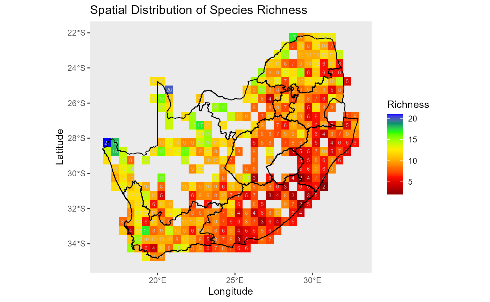
:chart_with_upwards_trend: Figure 4: Spatial distribution of species richness across the study area. Each grid cell shows the number of unique species (species richness) in each grid-cell.
:information_source: Why this matters: Early spatial diagnostics flag data gaps and uneven effort that can influence crowding and model fits.
:bulb: Summary: prepare_inputs() locks
in a clean, aligned foundation for trait-based analyses; store
fit and reference it throughout.
Generate hypothetical invaders: \(\textit{invader} \times \textit{traits}\)
When invader traits are unknown, you can simulate plausible invaders
from the resident pool to explore fitness scenarios.
simulate_invaders() builds an invader trait table aligned
with residents.
:hourglass_flowing_sand: What it does: It samples trait columns either independently (novel combinations) or row-wise (preserve covariance), supports bounded or distribution-based sampling for numerics, and honours factor levels.
:information_source: Why this matters: Simulation supports sensitivity analyses and planning when the exact invader set is uncertain.
:warning: Practical checks and tips: Prefer
rowwise for realism when covariance is essential; use
columnwise to probe unobserved combinations; keep trait
names and levels identical to residents.
stopifnot(exists("simulate_invaders"))
set.seed(42)
traits_inv = simulate_invaders(
resident_traits = traits_res,
species_col = NULL,
n_inv = 10,
mode = "columnwise", # or "rowwise"
numeric_method = "bootstrap", # "tnorm" / "uniform"
keep_bounds = TRUE,
inv_prefix = "inv",
keep_species_column = TRUE,
seed = 42
)
traits_all = rbind(traits_res, traits_inv)
head(traits_all[1:4,1:4]); tail(traits_all[1:4,1:4])
#> trait_cont1 trait_cont2 trait_cont3 trait_cont4
#> Acraea horta 0.8296121 0.8114763 -0.9221270 -0.6841896
#> Amata cerbera 0.8741508 -0.1060607 0.4975908 -0.2819434
#> Bicyclus safitza safitza -0.4277209 0.6720085 0.3545537 0.2912638
#> Cacyreus lingeus 0.6608953 0.4751912 -0.6574713 0.5516467
#> trait_cont1 trait_cont2 trait_cont3 trait_cont4
#> Acraea horta 0.8296121 0.8114763 -0.9221270 -0.6841896
#> Amata cerbera 0.8741508 -0.1060607 0.4975908 -0.2819434
#> Bicyclus safitza safitza -0.4277209 0.6720085 0.3545537 0.2912638
#> Cacyreus lingeus 0.6608953 0.4751912 -0.6574713 0.5516467
cat("Simulated invaders:", nrow(traits_inv),
"| invader traits:", ncol(traits_inv),
"| total species:", nrow(traits_all),
"| total traits:", ncol(traits_all), "\n")
#> Simulated invaders: 10 | invader traits: 20 | total species: 37 | total traits: 20:sparkles: Overall importance: This closes the data layer: residents, environment, and invaders are harmonised and ready for trait-space construction.
Shared trait space and resident crowding
This wrapper, prepare_trait_space(), builds the joint
trait geometry (PCoA on Gower), diagnoses centrality and convex hull
membership, and computes resident crowding \(C_{js}\) with optional site-wise z-scoring.
It returns traits, crowding, and (if requested) standardised inputs for
modelling.
:hourglass_flowing_sand: What the wrapper does (step-by-step):
- Standardises traits leakage-safely;
- Computes Gower distances and PCoA scores;
- Identifies centroid, density, and hull;
- Builds \(C_{js}\) from Hellinger weights and Gaussian trait kernels;
- Packages tidy diagnostics and plots.
Standardise model inputs (optional)
standardise_model_inputs() harmonises resident and
invader traits and any numeric environment columns while preventing
information leakage.
:hourglass_flowing_sand: Step-by-step: It z-scores resident traits and environment with a zero-variance guard ➔ scales invader numerics using resident moments ➔ coerces factor levels to resident sets ➔ optionally drops invader-only columns.
:information_source: Why this matters: Comparable scales improve ordination stability and GLMM convergence; resident-based scaling avoids leaking invader information.
:warning: Practical checks and tips: Keep invader columns a subset/compatible superset of residents; document factor level harmonisation.
Compute and plot the shared trait space
compute_trait_space() builds the unified trait map
across residents and invaders using Gower dissimilarities followed by
PCoA.
:hourglass_flowing_sand: Step-by-step: It computes distances across mixed types ➔ projects points to \((\mathrm{tr1},\mathrm{tr2})\) ➔ identifies the resident convex hull and centroid ➔ and optionally adds density surfaces and a dendrogram.
:information_source: Why this matters: Positions relative to the hull and core foreshadow niche overlap and novelty, guiding the interpretation of crowding and abiotic alignment.
:warning: Practical checks and tips: Ensure >=3 residents for a stable hull; keep trait schemas identical; record ordination settings for reproducibility.
Determine centrality and convex-hull membership
compute_centrality_hull() quantifies where species sit
relative to the resident cloud and whether invaders fall inside or
outside the realised trait boundary.
:hourglass_flowing_sand: Step-by-step: It estimates robust covariance ➔ computes Mahalanobis distances ➔ rescales to centrality (0 = peripheral, 1 = core) ➔ and tests hull membership for each invader.
:information_source: Why this matters: Central or in-hull invaders face stronger crowding; peripheral or out-of-hull invaders may experience weaker biotic resistance if the environment suits.
:warning: Practical checks and tips: Use robust covariance to limit outlier leverage; keep a tidy table of ranks and flags for later map legends.
Resident crowding \(C_{js}\) from composition × trait similarity
compute_resident_crowding() integrates community
composition and trait similarity into site × resident crowding fields
with optional per-site z-scores.
:hourglass_flowing_sand: Step-by-step: It Hellinger-transforms abundances to weights \(W\) ➔ converts resident-resident Gower distances to a Gaussian kernel \(K\) with bandwidth \(\sigma_\alpha\) (median positive distance by default) ➔ and computes \(C_{js} = (W K^\top)_{sj}\) ➔ with optional row-z standardisation yields \(C^{(z)}_{js}\).
:information_source: Why this matters: \(C_{js}\) is the resident-side template for invader crowding and directly enters invasion fitness.
:warning: Practical checks and tips: Verify name alignment between community and traits; examine distance distributions before fixing \(\sigma_\alpha\); prefer robust row-scales when z-scoring.
:zap: Run prepare_trait_space() to
construct the trait space, diagnostics, and \(C_{js}\) in one step, adding them to
fit.
stopifnot(inherits(fit, "invasimapr_fit"),
!is.null(fit$inputs$traits_res),
!is.null(fit$inputs$comm_res),
!is.null(fit$inputs$site_df))
stopifnot(exists("traits_inv"))
# try(source("D:/Methods/R/myR_Packages/b-cubed-versions/invasimapr/R/prepare_trait_space.R"), silent = TRUE)
# if (!exists("prepare_trait_space")) stop("prepare_trait_space() not found.")
fit = prepare_trait_space(
fit = fit,
traits_inv = traits_inv,
crowding_sigma = NULL, # data-driven default
do_standardise = TRUE,
row_z = FALSE,
show_plots = FALSE
)
# print(fit)
# str(fit, 1)
str(fit$traits, 1)
#> List of 10
#> $ gower : 'dissimilarity' Named num [1:666] 0.56 0.36 0.424 0.304 0.358 ...
#> ..- attr(*, "Labels")= chr [1:37] "Acraea horta" "Amata cerbera" "Bicyclus safitza safitza" "Cacyreus lingeus" ...
#> ..- attr(*, "Size")= int 37
#> ..- attr(*, "Metric")= chr "mixed"
#> ..- attr(*, "Types")= chr [1:20] "I" "I" "I" "I" ...
#> $ Q_res :'data.frame': 27 obs. of 2 variables:
#> $ Q_inv :'data.frame': 10 obs. of 2 variables:
#> $ hull :'data.frame': 11 obs. of 2 variables:
#> $ centroid : Named num [1:2] 3.65e-18 -5.44e-18
#> ..- attr(*, "names")= chr [1:2] "tr1" "tr2"
#> $ density :List of 3
#> $ plots_ts :List of 2
#> $ centrality: tibble [37 × 8] (S3: tbl_df/tbl/data.frame)
#> $ hull_df :'data.frame': 11 obs. of 2 variables:
#> $ plots_ch :List of 3
str(fit$crowding, 1)
#> List of 5
#> $ W_site : num [1:415, 1:27] 0 0 0 0.238 0 ...
#> ..- attr(*, "dimnames")=List of 2
#> ..- attr(*, "parameters")=List of 2
#> ..- attr(*, "decostand")= chr "hellinger"
#> $ D_res : num [1:27, 1:27] 0 0.56 0.36 0.424 0.304 ...
#> ..- attr(*, "dimnames")=List of 2
#> $ sigma_alpha: num 0.463
#> $ K_res_res : num [1:27, 1:27] 0 0.482 0.739 0.658 0.806 ...
#> ..- attr(*, "dimnames")=List of 2
#> $ C_js : num [1:415, 1:27] 2.14 1.63 1.84 2.21 1.88 ...
#> ..- attr(*, "dimnames")=List of 2:card_index_dividers: Save the core trait geometry objects and crowding matrices used by the residents model and for invader predictions.
# Trait space & diagnostics
Q_res = fit$traits$Q_res
Q_inv = fit$traits$Q_inv
gower_all = fit$traits$gower
hull_res = fit$traits$hull
centroid = fit$traits$centroid
central_df = fit$traits$centrality
# Resident crowding
C_js = fit$crowding$C_js
C_js_z = fit$crowding$C_js_z
C_mu_s = fit$crowding$C_mu_s
C_sd_s = fit$crowding$C_sd_s
W_site = fit$crowding$W_site
D_res = fit$crowding$D_res
K_res_res = fit$crowding$K_res_res
sigma_alpha = fit$crowding$sigma_alpha
# If standardisation ran
traits_res_glmm = fit$inputs_std$traits_res_glmm
traits_inv_glmm = fit$inputs_std$traits_inv_glmmVisualise different plots showing how invaders differ markedly in how much they overlap with resident trait strategies: For example, core invaders are more constrained by resident crowding, while peripheral invaders may exploit unfilled regions of trait space, though often at the cost of reduced environmental alignment. This framework links geometric novelty to invasion fitness expectations.
# Check output structure
# str(fit$traits, 1)
# Heatmap plot
# fit$traits$plots_ts$dens_plot
fit$traits$plots_ts$dens_plot() # draws to any current device (screen or file)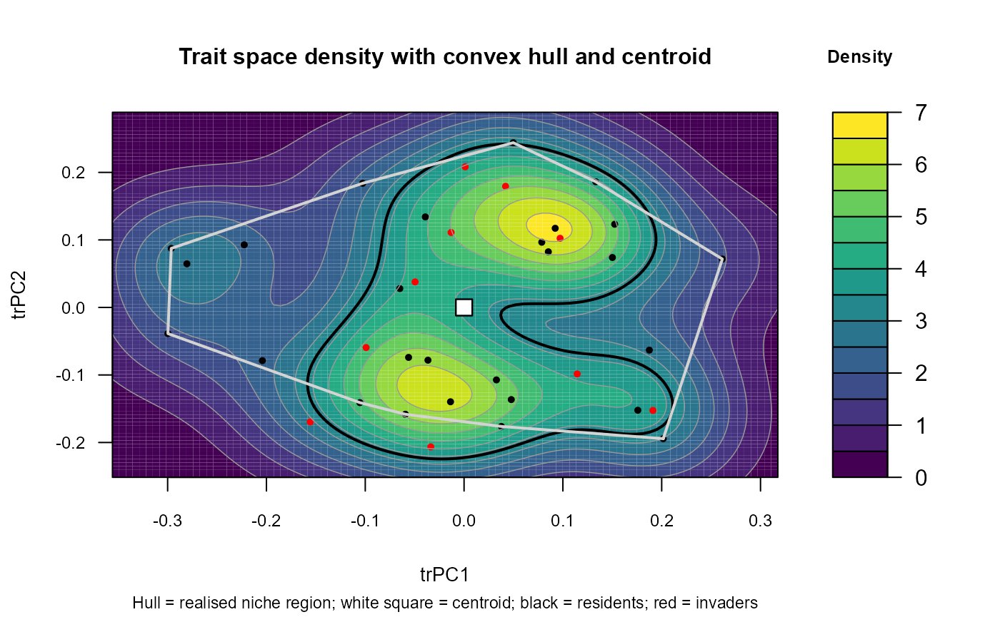
:chart_with_upwards_trend: Figure 5: Heatmap plot showing how all species are mapped into a shared trait space (PCoA on Gower distances). Coloured contours show kernel-density “hotspots” of resident strategies, the white polygon is the resident convex hull (realised niche region), and the white square marks the cloud centroid. Residents (black points) form a clearly multimodal structure with two dense modes (upper-right and lower-centre), separated by a lower-density corridor. Invaders (red points) are mostly inside the hull and often fall near the dense resident cores, positions that imply strong niche crowding penalties. A few invaders sit near the hull boundary or in sparser regions of trait space, indicating greater novelty and potentially weaker crowding if local abiotic suitability is high.
# Dendogram plot
fit$traits$plots_ts$dend_plot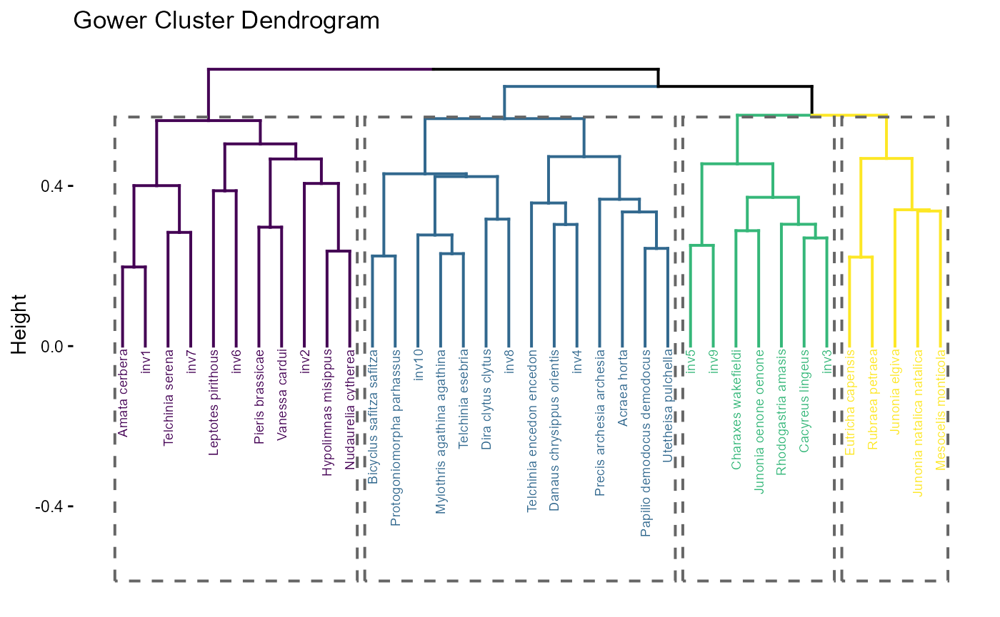
:chart_with_upwards_trend: Figure 6: Dendogram plot shows hierarchical clustering species using Gower distances. The large splits (branch heights) and coloured/dashed groups reveal distinct functional syndromes that align with the density modes in the trait map: a leftmost (purple) clade is well separated, while central clades (blue/green) encompass the dense core, and smaller rightmost clades (yellow) capture peripheral strategies. Together, the panels show a resident community with strong trait structure; invaders overlapping core clusters should experience higher \(C^{(z)}\) (crowding), whereas those on the periphery or near gaps in the hull may face weaker biotic resistance and thus higher establishment potential if \(r^{(z)}\) is favourable.
:bar_chart: Centrality ranks and hull maps to highlight novelty and diagnose ordination and kernel choices. The three figures below, illustrate how invaders position relative to residents in trait space, and how this affects their potential to establish.
# Check output structure
# str(fit$traits,1)
# str(fit$traits$plots_ch, 1)
# head(fit$crowding$C_js[1:4,1:4])
# Plot Centrality and hull status
if (!is.null(fit$traits$plots_ch)) {
print(fit$traits$plots_ch$p_trait)
}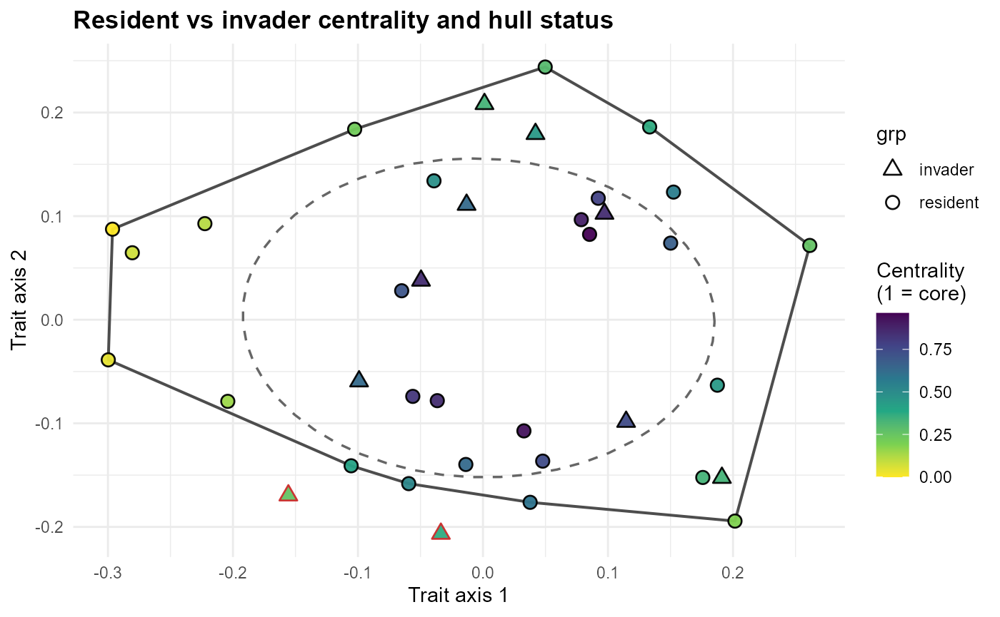
:chart_with_upwards_trend: Figure 7: Centrality and hull status shows residents (circles) and invaders (triangles) embedded in a two-dimensional trait space. The convex hull (solid polygon) marks the realised resident niche, while the dashed ellipse indicates the central core region. Colour shading reflects centrality (values closer to 1 are deeper within the resident cloud). Many invaders fall inside the hull but with relatively low centrality, placing them nearer the trait-space periphery. A few invaders lie outside the hull, representing novel strategies not currently expressed by residents.
# Plot Mahalanobis distance distribution
fit$traits$plots_ch$p_dist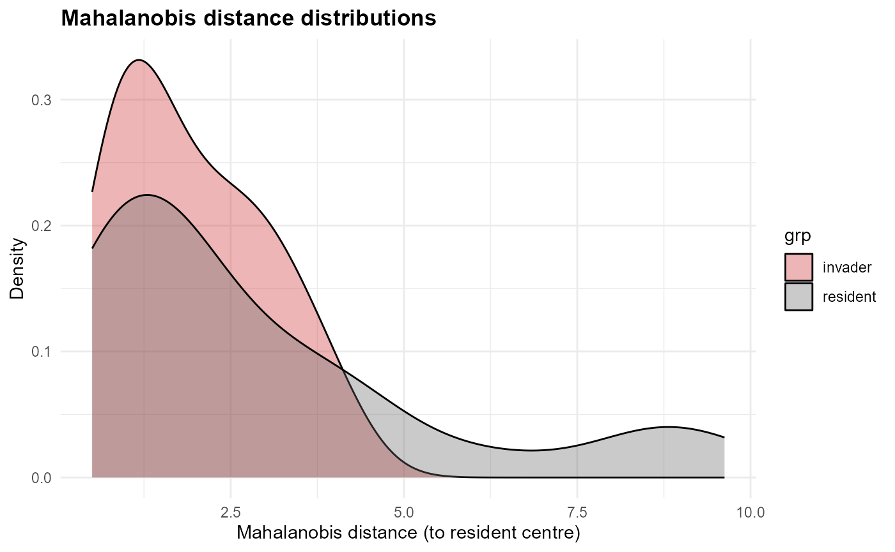
:chart_with_upwards_trend: Figure 8: Mahalanobis distance distribution comparisons from the resident centroid. Residents (grey) cluster close to the centre, with most distances below 2-3 units. Invaders (red) show a broader distribution, with some overlapping resident values but others displaced further into the tails. This highlights greater heterogeneity among invaders, with several occupying marginal or novel positions.
# Plot Invader ranking by centrality
fit$traits$plots_ch$p_rank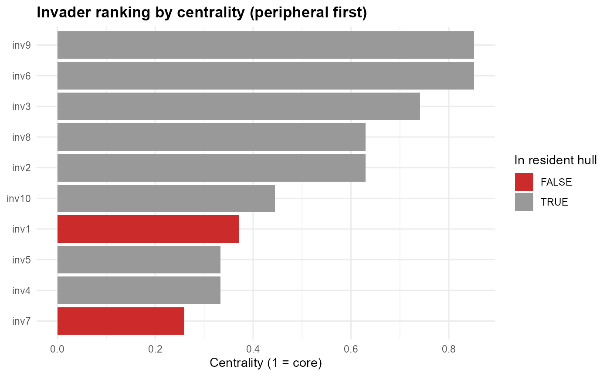
:chart_with_upwards_trend: Figure 9: Invader ranking by centrality (from peripheral to core). Peripheral invaders (low centrality) are often those falling outside the hull (red bars). These species represent the most novel introductions and are expected to experience weaker crowding, though their establishment will depend on abiotic suitability. Invaders with higher centrality (grey bars) overlap strongly with residents, implying greater competition and reduced establishment potential.
:sparkles: Overall importance: This stage anchors the trait geometry and the resident-side crowding fields that everything else builds on.
:bulb: Summary. You now have a reproducible trait map, novelty diagnostics, and \(C^{(z)}_{js}\) on a site-comparable scale.
Resident predictors (standardised): \(r^{(z)}_{js}, C^{(z)}_{js}, S^{(z)}_{js}\)
model_residents() fits a residents-only GLMM that yields
site-standardised abiotic suitability \(r^{(z)}_{js}\) and carries forward
niche crowding \(C^{(z)}_{js}\). It also constructs a
site saturation index \(S^{(z)}_{js}\) broadcast from a site-only
score.
:hourglass_flowing_sand: What the wrapper does (step-by-step):
- Standardises environment and resident traits for the GLMM,
- Builds a transparent formula (with optional \(E\times T\) interactions),
-
Fits
glmmTMB, - Predicts fixed-effects η for residents, and
- Applies per-site z-scores to \(r_{js}\).
- Computes \(S_s\) via a chosen mode and returns \(S^{(z)}\).
Build the model frame and formula
build_model_formula() discovers predictors and assembles
a formula that is reused for invaders to ensure consistent
structure.
:hourglass_flowing_sand: Step-by-step: It infers
environment and trait terms ➔ adds mains and optional \(E\times T\) ➔ attaches
(1|site) + (1|species) and optional zero-correlation random
slopes ➔ returns a valid formula.
:information_source: Why this matters: Consistent specification across residents and invaders avoids scale drift and makes coefficients interpretable in the trait plane.
:warning: Checks/tips: Keep naming conventions
stable (env_*, trait_*); avoid random slopes
for site-only indices.
Fit the residents model (e.g., GLMM)
prep_resident_glmm() expands the long site×resident
frame, fits glmmTMB, and returns fixed-effect predictions
as a site×resident matrix.
:hourglass_flowing_sand: Step-by-step: It joins site
environment and resident traits ➔ coerces keys to factors ➔ fits a
Tweedie log-link GLMM ➔ and predicts η with
re.form = NA.
:information_source: Why this matters: Fixed-effect predictions provide an abiotic suitability surface without borrowing random effects across species or sites.
:warning: Checks/tips: Ensure numeric matrices, no
NA predictors, and sensible convergence (simplify
interactions if needed).
Site-standardised resident predictors
standardise_by_site() centres and scales each site row
for \(r_{js}\) (and for \(C_{js}\) if needed), yielding \(r^{(z)}_{js}\) and \(C^{(z)}_{js}\).
:hourglass_flowing_sand: Step-by-step: It computes row means and SDs (robust optional) ➔ guards zero SD ➔ and returns z-scores plus moments.
:information_source: Why this matters: Within-site scaling makes predictors comparable across species and ensures invaders can be standardised on resident moments.
:warning: Checks/tips: Prefer robust scaling for
skewed \(C\); retain
row_mean and row_sd for invader
standardisation.
Site-only saturation \(S_s\) and global z-score
compute_site_saturation() builds a site-only competition
index from totals, modelled dominance, or evenness deficit, then applies
a global z-score and broadcasts to species.
:hourglass_flowing_sand: Step-by-step: It computes
\(S_s\) by mode ➔ applies global z ➔
and returns S_js_z for residents.
:information_source: Why this matters: \(S^{(z)}\) captures non-trait-specific crowding pressure and complements \(C^{(z)}\).
:warning: Checks/tips: Do not add random slopes on \(S_z\) (no within-site variation); guard zero richness.
:zap: Run model_residents() to fit the
resident model (e.g. GLMM), construct standardised predictors, and write
results back to fit$model and
fit$residents.
# try(source("D:/Methods/R/myR_Packages/b-cubed-versions/invasimapr/R/model_residents.R"), silent = TRUE)
# if (!exists("model_residents")) stop("model_residents() not found.")
# Run model_residents() function
fit = model_residents(
fit,
family = glmmTMB::tweedie(link = "log"),
include_env_trait_interactions = TRUE,
saturation_mode = "evenness_deficit",
reduce_strategy = 'none',
robust_r = TRUE
)
# print(fit)
# str(fit$model, 1)
# str(fit$residents, 1)
summary(fit$residents$fit_r)
#> Family: tweedie ( log )
#> Formula: abundance ~ env1 + env2 + env3 + env4 + env5 + env6 + env7 +
#> env8 + env9 + env10 + trait_cont1 + trait_cont2 + trait_cont3 +
#> trait_cont4 + trait_cont5 + trait_cont6 + trait_cont7 + trait_cont8 +
#> trait_cont9 + trait_cont10 + trait_cat11 + trait_cat12 +
#> trait_cat13 + trait_cat14 + trait_cat15 + trait_ord16 + trait_ord17 +
#> trait_bin18 + trait_bin19 + trait_ord20 + (env1 + env2 +
#> env3 + env4 + env5 + env6 + env7 + env8 + env9 + env10):(trait_cont1 +
#> trait_cont2 + trait_cont3 + trait_cont4 + trait_cont5 + trait_cont6 +
#> trait_cont7 + trait_cont8 + trait_cont9 + trait_cont10 +
#> trait_cat11 + trait_cat12 + trait_cat13 + trait_cat14 + trait_cat15 +
#> trait_ord16 + trait_ord17 + trait_bin18 + trait_bin19 + trait_ord20) +
#> (1 | site) + (1 | species)
#> Data: attempt$rg$dat_r
#>
#> AIC BIC logLik -2*log(L) df.resid
#> 38197.5 40241.0 -18819.8 37639.5 10926
#>
#> Random effects:
#>
#> Conditional model:
#> Groups Name Variance Std.Dev.
#> site (Intercept) 0.006301 0.07938
#> species (Intercept) 0.001645 0.04056
#> Number of obs: 11205, groups: site, 415; species, 27
#>
#> Dispersion parameter for tweedie family (): 7.98
#>
#> Conditional model:
#> Estimate Std. Error z value Pr(>|z|)
#> (Intercept) 1.2833901 0.1361082 9.429 < 2e-16 ***
#> env1 0.4238189 0.2730032 1.552 0.120559
#> env2 -0.4629570 0.2814522 -1.645 0.099993 .
#> env3 -0.1523661 0.3976060 -0.383 0.701565
#> env4 0.2574086 0.3011752 0.855 0.392728
#> env5 0.2883784 0.3298333 0.874 0.381946
#> env6 0.0920454 0.3380372 0.272 0.785396
#> env7 0.1802530 0.4869892 0.370 0.711280
#> env8 -0.1178539 0.4933806 -0.239 0.811206
#> env9 -0.1477103 0.4607070 -0.321 0.748501
#> env10 -0.2388646 0.5557325 -0.430 0.667327
#> trait_cont1 -0.2879529 0.0995748 -2.892 0.003830 **
#> trait_cont2 -0.1468610 0.0429340 -3.421 0.000625 ***
#> trait_cont3 -0.0183904 0.0671736 -0.274 0.784258
#> trait_cont4 0.0057871 0.0526189 0.110 0.912425
#> trait_cont5 0.0329278 0.0538160 0.612 0.540631
#> trait_cont6 0.0446251 0.0734411 0.608 0.543432
#> trait_cont7 -0.0332561 0.0488246 -0.681 0.495787
#> trait_cont8 0.0582392 0.0701413 0.830 0.406362
#> trait_cont9 -0.0030572 0.0521304 -0.059 0.953235
#> trait_cont10 0.0757443 0.0495473 1.529 0.126332
#> trait_cat11grassland 0.0384514 0.1842370 0.209 0.834678
#> trait_cat11wetland -0.1194091 0.2430696 -0.491 0.623246
#> trait_cat12nocturnal -0.2214629 0.1160278 -1.909 0.056300 .
#> trait_cat13multivoltine 0.0069169 0.0965116 0.072 0.942866
#> trait_cat13univoltine -0.1972040 0.1309296 -1.506 0.132020
#> trait_cat14generalist 0.0380147 0.2600996 0.146 0.883799
#> trait_cat14nectarivore 0.2441572 0.1720548 1.419 0.155880
#> trait_cat15resident -0.0448762 0.1352528 -0.332 0.740044
#> trait_ord16 0.0155845 0.0581019 0.268 0.788525
#> trait_ord17 -0.0457999 0.0426140 -1.075 0.282481
#> trait_bin18 0.0384106 0.0484466 0.793 0.427869
#> trait_bin19 0.0104646 0.0576802 0.181 0.856035
#> trait_ord20medium 0.0838120 0.2635444 0.318 0.750471
#> trait_ord20small -0.1652942 0.1540706 -1.073 0.283340
#> env1:trait_cont1 0.2590543 0.2018959 1.283 0.199454
#> env1:trait_cont2 0.0511837 0.0872490 0.587 0.557446
#> env1:trait_cont3 0.0419782 0.1365365 0.307 0.758500
#> env1:trait_cont4 0.0569235 0.1068453 0.533 0.594196
#> env1:trait_cont5 -0.1396320 0.1099753 -1.270 0.204203
#> env1:trait_cont6 -0.1149766 0.1490549 -0.771 0.440487
#> env1:trait_cont7 0.0247308 0.1007236 0.246 0.806045
#> env1:trait_cont8 -0.0832165 0.1424527 -0.584 0.559107
#> env1:trait_cont9 0.0193295 0.1069047 0.181 0.856516
#> env1:trait_cont10 -0.0166879 0.1012074 -0.165 0.869032
#> env1:trait_cat11grassland -0.2495010 0.3716669 -0.671 0.502028
#> env1:trait_cat11wetland -0.2737927 0.4937667 -0.554 0.579238
#> env1:trait_cat12nocturnal -0.0896390 0.2365215 -0.379 0.704696
#> env1:trait_cat13multivoltine 0.1300371 0.1954317 0.665 0.505805
#> env1:trait_cat13univoltine 0.2479814 0.2637601 0.940 0.347126
#> env1:trait_cat14generalist 0.1803710 0.5286677 0.341 0.732968
#> env1:trait_cat14nectarivore -0.2256056 0.3489209 -0.647 0.517903
#> env1:trait_cat15resident -0.1195242 0.2759828 -0.433 0.664952
#> env1:trait_ord16 0.0164264 0.1176699 0.140 0.888978
#> env1:trait_ord17 -0.0983943 0.0860021 -1.144 0.252585
#> env1:trait_bin18 -0.0447998 0.0978090 -0.458 0.646928
#> env1:trait_bin19 -0.0989036 0.1160240 -0.852 0.393970
#> env1:trait_ord20medium -0.1203885 0.5353213 -0.225 0.822065
#> env1:trait_ord20small 0.2076244 0.3127982 0.664 0.506841
#> env2:trait_cont1 -0.1073236 0.2099272 -0.511 0.609182
#> env2:trait_cont2 0.0998720 0.0909106 1.099 0.271954
#> env2:trait_cont3 -0.0302382 0.1432439 -0.211 0.832812
#> env2:trait_cont4 0.0062584 0.1123871 0.056 0.955592
#> env2:trait_cont5 -0.0215891 0.1145595 -0.188 0.850522
#> env2:trait_cont6 0.0958735 0.1549708 0.619 0.536143
#> env2:trait_cont7 -0.1614124 0.1051725 -1.535 0.124848
#> env2:trait_cont8 -0.1579836 0.1475678 -1.071 0.284357
#> env2:trait_cont9 -0.0824353 0.1116071 -0.739 0.460137
#> env2:trait_cont10 0.0042922 0.1059621 0.041 0.967689
#> env2:trait_cat11grassland 0.3465967 0.3880252 0.893 0.371733
#> env2:trait_cat11wetland -0.1429870 0.5138745 -0.278 0.780818
#> env2:trait_cat12nocturnal -0.0109025 0.2464091 -0.044 0.964709
#> env2:trait_cat13multivoltine 0.0772089 0.2022998 0.382 0.702717
#> env2:trait_cat13univoltine -0.0152930 0.2723597 -0.056 0.955222
#> env2:trait_cat14generalist 0.0938038 0.5469770 0.171 0.863835
#> env2:trait_cat14nectarivore 0.0034584 0.3626978 0.010 0.992392
#> env2:trait_cat15resident 0.0934440 0.2852982 0.328 0.743266
#> env2:trait_ord16 0.1898966 0.1219071 1.558 0.119301
#> env2:trait_ord17 0.1206038 0.0899711 1.340 0.180092
#> env2:trait_bin18 0.0037917 0.1020570 0.037 0.970363
#> env2:trait_bin19 0.0436744 0.1229657 0.355 0.722458
#> env2:trait_ord20medium -0.1337030 0.5551158 -0.241 0.809667
#> env2:trait_ord20small 0.1591382 0.3209528 0.496 0.620014
#> env3:trait_cont1 -0.0372629 0.2951912 -0.126 0.899548
#> env3:trait_cont2 0.0420001 0.1284998 0.327 0.743782
#> env3:trait_cont3 0.0621160 0.1991385 0.312 0.755099
#> env3:trait_cont4 0.0263516 0.1563270 0.169 0.866137
#> env3:trait_cont5 -0.0431644 0.1605220 -0.269 0.788006
#> env3:trait_cont6 0.1030986 0.2177213 0.474 0.635832
#> env3:trait_cont7 -0.1336400 0.1481034 -0.902 0.366875
#> env3:trait_cont8 -0.0871097 0.2080141 -0.419 0.675385
#> env3:trait_cont9 0.0312030 0.1557542 0.200 0.841219
#> env3:trait_cont10 -0.0836775 0.1486914 -0.563 0.573599
#> env3:trait_cat11grassland 0.0530339 0.5416079 0.098 0.921996
#> env3:trait_cat11wetland 0.0004273 0.7215614 0.001 0.999527
#> env3:trait_cat12nocturnal 0.0338567 0.3435294 0.099 0.921491
#> env3:trait_cat13multivoltine -0.0355021 0.2866598 -0.124 0.901436
#> env3:trait_cat13univoltine -0.0267714 0.3821760 -0.070 0.944154
#> env3:trait_cat14generalist -0.0064808 0.7741574 -0.008 0.993321
#> env3:trait_cat14nectarivore 0.1040584 0.5059753 0.206 0.837057
#> env3:trait_cat15resident 0.1061745 0.4041305 0.263 0.792764
#> env3:trait_ord16 0.0159803 0.1718122 0.093 0.925895
#> env3:trait_ord17 0.1282873 0.1257695 1.020 0.307719
#> env3:trait_bin18 -0.1023514 0.1429024 -0.716 0.473848
#> env3:trait_bin19 0.0989221 0.1715115 0.577 0.564097
#> env3:trait_ord20medium -0.0583839 0.7834286 -0.075 0.940594
#> env3:trait_ord20small 0.0076437 0.4583593 0.017 0.986695
#> env4:trait_cont1 0.1871081 0.2217728 0.844 0.398841
#> env4:trait_cont2 -0.0448973 0.0951791 -0.472 0.637131
#> env4:trait_cont3 0.1660386 0.1507123 1.102 0.270595
#> env4:trait_cont4 0.0513924 0.1184007 0.434 0.664248
#> env4:trait_cont5 0.0259057 0.1226941 0.211 0.832777
#> env4:trait_cont6 -0.0927677 0.1635505 -0.567 0.570570
#> env4:trait_cont7 0.1163699 0.1121210 1.038 0.299319
#> env4:trait_cont8 -0.0180249 0.1561764 -0.115 0.908117
#> env4:trait_cont9 0.0772283 0.1170715 0.660 0.509467
#> env4:trait_cont10 -0.0208430 0.1107179 -0.188 0.850678
#> env4:trait_cat11grassland -0.1799181 0.4028088 -0.447 0.655122
#> env4:trait_cat11wetland 0.3953166 0.5415347 0.730 0.465394
#> env4:trait_cat12nocturnal -0.0130807 0.2587156 -0.051 0.959676
#> env4:trait_cat13multivoltine -0.0585961 0.2173298 -0.270 0.787454
#> env4:trait_cat13univoltine 0.0947713 0.2903156 0.326 0.744090
#> env4:trait_cat14generalist 0.0786553 0.5813832 0.135 0.892383
#> env4:trait_cat14nectarivore 0.0233595 0.3815324 0.061 0.951180
#> env4:trait_cat15resident -0.1226286 0.3045990 -0.403 0.687250
#> env4:trait_ord16 -0.1742459 0.1306910 -1.333 0.182444
#> env4:trait_ord17 -0.0095848 0.0936071 -0.102 0.918444
#> env4:trait_bin18 0.1460148 0.1070335 1.364 0.172505
#> env4:trait_bin19 -0.1382084 0.1268928 -1.089 0.276077
#> env4:trait_ord20medium -0.1994732 0.5888167 -0.339 0.734783
#> env4:trait_ord20small -0.2580449 0.3457473 -0.746 0.455462
#> env5:trait_cont1 0.0123702 0.2456663 0.050 0.959841
#> env5:trait_cont2 -0.0609928 0.1066625 -0.572 0.567438
#> env5:trait_cont3 0.0756810 0.1652044 0.458 0.646877
#> env5:trait_cont4 0.0216662 0.1288836 0.168 0.866499
#> env5:trait_cont5 0.0346696 0.1318799 0.263 0.792637
#> env5:trait_cont6 -0.0602581 0.1811538 -0.333 0.739410
#> env5:trait_cont7 0.0551824 0.1224985 0.450 0.652368
#> env5:trait_cont8 0.0679692 0.1728442 0.393 0.694142
#> env5:trait_cont9 0.0678823 0.1291918 0.525 0.599278
#> env5:trait_cont10 -0.0582309 0.1233393 -0.472 0.636841
#> env5:trait_cat11grassland -0.1218774 0.4491573 -0.271 0.786124
#> env5:trait_cat11wetland 0.0071179 0.6004955 0.012 0.990543
#> env5:trait_cat12nocturnal -0.1119143 0.2868002 -0.390 0.696376
#> env5:trait_cat13multivoltine -0.1107300 0.2358441 -0.470 0.638709
#> env5:trait_cat13univoltine -0.2036733 0.3176916 -0.641 0.521455
#> env5:trait_cat14generalist -0.2461068 0.6403223 -0.384 0.700720
#> env5:trait_cat14nectarivore -0.0526845 0.4223282 -0.125 0.900723
#> env5:trait_cat15resident 0.0484835 0.3353476 0.145 0.885045
#> env5:trait_ord16 -0.0811707 0.1411523 -0.575 0.565252
#> env5:trait_ord17 -0.0972289 0.1035414 -0.939 0.347713
#> env5:trait_bin18 0.1027040 0.1188081 0.864 0.387339
#> env5:trait_bin19 -0.0636271 0.1419014 -0.448 0.653872
#> env5:trait_ord20medium 0.0120206 0.6490946 0.019 0.985225
#> env5:trait_ord20small -0.2150638 0.3789890 -0.567 0.570397
#> env6:trait_cont1 -0.0246898 0.2480779 -0.100 0.920722
#> env6:trait_cont2 -0.0004339 0.1071391 -0.004 0.996769
#> env6:trait_cont3 0.0226814 0.1673397 0.136 0.892184
#> env6:trait_cont4 0.0534481 0.1317414 0.406 0.684960
#> env6:trait_cont5 0.1094548 0.1359880 0.805 0.420886
#> env6:trait_cont6 0.1142859 0.1832831 0.624 0.532924
#> env6:trait_cont7 0.1214664 0.1249329 0.972 0.330925
#> env6:trait_cont8 0.1004448 0.1755440 0.572 0.567192
#> env6:trait_cont9 0.0738422 0.1303336 0.567 0.571011
#> env6:trait_cont10 0.0337164 0.1243256 0.271 0.786241
#> env6:trait_cat11grassland -0.3415737 0.4513362 -0.757 0.449166
#> env6:trait_cat11wetland -0.1465829 0.6027141 -0.243 0.807847
#> env6:trait_cat12nocturnal 0.2060312 0.2883638 0.714 0.474928
#> env6:trait_cat13multivoltine -0.2666277 0.2412991 -1.105 0.269174
#> env6:trait_cat13univoltine 0.2117171 0.3250485 0.651 0.514827
#> env6:trait_cat14generalist -0.3044428 0.6501297 -0.468 0.639584
#> env6:trait_cat14nectarivore -0.0652948 0.4260207 -0.153 0.878188
#> env6:trait_cat15resident 0.0024190 0.3407272 0.007 0.994335
#> env6:trait_ord16 -0.1436754 0.1453234 -0.989 0.322830
#> env6:trait_ord17 0.0901250 0.1052978 0.856 0.392050
#> env6:trait_bin18 -0.0602324 0.1202303 -0.501 0.616388
#> env6:trait_bin19 0.0404023 0.1420808 0.284 0.776133
#> env6:trait_ord20medium 0.3375212 0.6570004 0.514 0.607440
#> env6:trait_ord20small 0.0095392 0.3848254 0.025 0.980224
#> env7:trait_cont1 -0.1730178 0.3627418 -0.477 0.633382
#> env7:trait_cont2 -0.0316228 0.1574463 -0.201 0.840817
#> env7:trait_cont3 -0.1838059 0.2450052 -0.750 0.453127
#> env7:trait_cont4 0.0300894 0.1917809 0.157 0.875328
#> env7:trait_cont5 -0.1932804 0.1958736 -0.987 0.323760
#> env7:trait_cont6 -0.0130956 0.2664564 -0.049 0.960802
#> env7:trait_cont7 -0.0292479 0.1810542 -0.162 0.871666
#> env7:trait_cont8 0.0192467 0.2547439 0.076 0.939775
#> env7:trait_cont9 0.0404890 0.1916159 0.211 0.832651
#> env7:trait_cont10 0.0584509 0.1818610 0.321 0.747904
#> env7:trait_cat11grassland -0.1630086 0.6679496 -0.244 0.807197
#> env7:trait_cat11wetland 0.0845999 0.8871659 0.095 0.924029
#> env7:trait_cat12nocturnal -0.3929308 0.4254169 -0.924 0.355675
#> env7:trait_cat13multivoltine -0.0399157 0.3498784 -0.114 0.909171
#> env7:trait_cat13univoltine 0.0647597 0.4663271 0.139 0.889551
#> env7:trait_cat14generalist 0.2251639 0.9501766 0.237 0.812680
#> env7:trait_cat14nectarivore 0.1571325 0.6249955 0.251 0.801494
#> env7:trait_cat15resident -0.1963711 0.4947895 -0.397 0.691457
#> env7:trait_ord16 0.0412175 0.2100704 0.196 0.844447
#> env7:trait_ord17 -0.1892053 0.1544197 -1.225 0.220475
#> env7:trait_bin18 -0.0525759 0.1748677 -0.301 0.763673
#> env7:trait_bin19 0.0490433 0.2095157 0.234 0.814923
#> env7:trait_ord20medium -0.0208916 0.9611256 -0.022 0.982658
#> env7:trait_ord20small 0.0436226 0.5605275 0.078 0.937968
#> env8:trait_cont1 -0.0992404 0.3664092 -0.271 0.786510
#> env8:trait_cont2 -0.0059324 0.1597249 -0.037 0.970372
#> env8:trait_cont3 -0.1333658 0.2480298 -0.538 0.590784
#> env8:trait_cont4 -0.0397340 0.1949399 -0.204 0.838489
#> env8:trait_cont5 0.0284401 0.2002928 0.142 0.887086
#> env8:trait_cont6 -0.0124557 0.2704537 -0.046 0.963266
#> env8:trait_cont7 -0.0510572 0.1848869 -0.276 0.782430
#> env8:trait_cont8 0.0222058 0.2579816 0.086 0.931407
#> env8:trait_cont9 -0.0568809 0.1938428 -0.293 0.769187
#> env8:trait_cont10 0.0581838 0.1849161 0.315 0.753027
#> env8:trait_cat11grassland 0.1557119 0.6715923 0.232 0.816651
#> env8:trait_cat11wetland -0.0711748 0.8961786 -0.079 0.936698
#> env8:trait_cat12nocturnal 0.0424624 0.4281492 0.099 0.920998
#> env8:trait_cat13multivoltine 0.0343569 0.3565739 0.096 0.923240
#> env8:trait_cat13univoltine 0.0215318 0.4744210 0.045 0.963800
#> env8:trait_cat14generalist -0.0032950 0.9606829 -0.003 0.997263
#> env8:trait_cat14nectarivore -0.1248816 0.6285140 -0.199 0.842503
#> env8:trait_cat15resident 0.1079409 0.5033339 0.214 0.830195
#> env8:trait_ord16 0.0692422 0.2139331 0.324 0.746193
#> env8:trait_ord17 -0.0738160 0.1565469 -0.472 0.637265
#> env8:trait_bin18 0.1069665 0.1770867 0.604 0.545821
#> env8:trait_bin19 0.0481182 0.2126110 0.226 0.820952
#> env8:trait_ord20medium 0.0603182 0.9705939 0.062 0.950447
#> env8:trait_ord20small 0.0944765 0.5688332 0.166 0.868088
#> env9:trait_cont1 -0.0073004 0.3413243 -0.021 0.982936
#> env9:trait_cont2 0.0454615 0.1480482 0.307 0.758788
#> env9:trait_cont3 -0.1361370 0.2306877 -0.590 0.555100
#> env9:trait_cont4 -0.0592998 0.1810096 -0.328 0.743210
#> env9:trait_cont5 -0.0149632 0.1850655 -0.081 0.935559
#> env9:trait_cont6 0.1050022 0.2515981 0.417 0.676429
#> env9:trait_cont7 -0.0480970 0.1717226 -0.280 0.779412
#> env9:trait_cont8 0.0070151 0.2410816 0.029 0.976786
#> env9:trait_cont9 -0.0165517 0.1801239 -0.092 0.926785
#> env9:trait_cont10 0.0693048 0.1715746 0.404 0.686261
#> env9:trait_cat11grassland -0.0347783 0.6246313 -0.056 0.955598
#> env9:trait_cat11wetland -0.1138468 0.8314303 -0.137 0.891087
#> env9:trait_cat12nocturnal 0.1370395 0.3984670 0.344 0.730909
#> env9:trait_cat13multivoltine 0.0189703 0.3299463 0.057 0.954151
#> env9:trait_cat13univoltine 0.2276917 0.4407246 0.517 0.605414
#> env9:trait_cat14generalist 0.1737563 0.8933064 0.195 0.845777
#> env9:trait_cat14nectarivore 0.1109390 0.5863222 0.189 0.849927
#> env9:trait_cat15resident -0.0600524 0.4682556 -0.128 0.897953
#> env9:trait_ord16 0.1000814 0.1981401 0.505 0.613485
#> env9:trait_ord17 0.1797645 0.1447305 1.242 0.214213
#> env9:trait_bin18 -0.1115117 0.1650530 -0.676 0.499287
#> env9:trait_bin19 0.1064867 0.1969115 0.541 0.588656
#> env9:trait_ord20medium -0.0006363 0.9029495 -0.001 0.999438
#> env9:trait_ord20small -0.0269392 0.5265848 -0.051 0.959199
#> env10:trait_cont1 0.1912956 0.4139308 0.462 0.643978
#> env10:trait_cont2 -0.0157284 0.1797682 -0.087 0.930280
#> env10:trait_cont3 0.0801624 0.2793349 0.287 0.774131
#> env10:trait_cont4 -0.1313472 0.2184302 -0.601 0.547625
#> env10:trait_cont5 0.2234582 0.2237496 0.999 0.317941
#> env10:trait_cont6 0.0052068 0.3047726 0.017 0.986369
#> env10:trait_cont7 0.0064104 0.2063383 0.031 0.975216
#> env10:trait_cont8 0.0719547 0.2909494 0.247 0.804668
#> env10:trait_cont9 -0.0336234 0.2186681 -0.154 0.877795
#> env10:trait_cont10 -0.0796577 0.2078604 -0.383 0.701551
#> env10:trait_cat11grassland 0.1113663 0.7630030 0.146 0.883955
#> env10:trait_cat11wetland 0.0414050 1.0116675 0.041 0.967354
#> env10:trait_cat12nocturnal 0.4401441 0.4845083 0.908 0.363649
#> env10:trait_cat13multivoltine 0.0390652 0.3989402 0.098 0.921994
#> env10:trait_cat13univoltine -0.2102280 0.5343190 -0.393 0.693987
#> env10:trait_cat14generalist -0.1335313 1.0841116 -0.123 0.901972
#> env10:trait_cat14nectarivore 0.0755655 0.7124468 0.106 0.915531
#> env10:trait_cat15resident 0.2440925 0.5650561 0.432 0.665756
#> env10:trait_ord16 -0.1135952 0.2396225 -0.474 0.635458
#> env10:trait_ord17 0.1761947 0.1770831 0.995 0.319745
#> env10:trait_bin18 0.0451127 0.1997347 0.226 0.821308
#> env10:trait_bin19 0.0482269 0.2394590 0.201 0.840386
#> env10:trait_ord20medium -0.0248263 1.0958666 -0.023 0.981926
#> env10:trait_ord20small -0.2894524 0.6378556 -0.454 0.649980
#> ---
#> Signif. codes: 0 '***' 0.001 '**' 0.01 '*' 0.05 '.' 0.1 ' ' 1:card_index_dividers: Save the core resident model objects used for invader predictions.
str(fit$residents, 1)
#> List of 16
#> $ fit_r :List of 7
#> ..- attr(*, "class")= chr "glmmTMB"
#> $ dat_r :'data.frame': 11205 obs. of 33 variables:
#> $ grid_res:'data.frame': 11205 obs. of 33 variables:
#> $ fml :Class 'formula' language abundance ~ env1 + env2 + env3 + env4 + env5 + env6 + env7 + env8 + env9 + env10 + trait_cont1 + trait_cont2| __truncated__ ...
#> .. ..- attr(*, ".Environment")=<environment: 0x000002ebd1f0a708>
#> $ r_js : num [1:415, 1:27] 1.061 0.957 1.218 1.247 1.415 ...
#> ..- attr(*, "dimnames")=List of 2
#> $ mu_js : num [1:415, 1:27] 2.89 2.6 3.38 3.48 4.12 ...
#> ..- attr(*, "dimnames")=List of 2
#> $ r_js_z : num [1:415, 1:27] -0.1157 -0.2056 0.0858 -0.1993 0.1854 ...
#> ..- attr(*, "dimnames")=List of 2
#> $ r_mu_s : Named num [1:415] 1.17 1.14 1.14 1.39 1.25 ...
#> ..- attr(*, "names")= chr [1:415] "82" "83" "84" "117" ...
#> $ r_sd_s : Named num [1:415] 0.906 0.909 0.884 0.703 0.898 ...
#> ..- attr(*, "names")= chr [1:415] "82" "83" "84" "117" ...
#> $ C_js_z : num [1:415, 1:27] 1.028 -1.057 1.46 0.881 1.484 ...
#> ..- attr(*, "dimnames")=List of 2
#> $ C_mu_s : Named num [1:415] 1.98 1.74 1.61 2.06 1.61 ...
#> ..- attr(*, "names")= chr [1:415] "82" "83" "84" "117" ...
#> $ C_sd_s : Named num [1:415] 0.154 0.101 0.159 0.177 0.176 ...
#> ..- attr(*, "names")= chr [1:415] "82" "83" "84" "117" ...
#> $ S_s : Named num [1:415] 0.0798 0.025 0.1327 0.1478 0.226 ...
#> ..- attr(*, "names")= chr [1:415] "82" "83" "84" "117" ...
#> $ S_s_z : Named num [1:415] 0.172 -1.104 1.406 1.758 3.579 ...
#> ..- attr(*, "names")= chr [1:415] "82" "83" "84" "117" ...
#> $ S_js_z : num [1:415, 1:27] 0.172 -1.104 1.406 1.758 3.579 ...
#> ..- attr(*, "dimnames")=List of 2
#> $ messages: chr [1:2] "preflight_gb=0.02" "path=original"
r_js = fit$residents$r_js
r_js_z = fit$residents$r_js_z
C_js_z = fit$residents$C_js_z
S_s_z = fit$residents$S_s_z
S_js_z = fit$residents$S_js_z
r_mu_s = fit$residents$r_mu_s
r_sd_s = fit$residents$r_sd_s:bar_chart: Site map of \(S^{(z)}\) and quick checks on the spread of \(C^{(z)}\) to help confirm scales and hotspots.
# str(fit$residents,1)
head(fit$residents$S_js_z[1:4,1:4])
#> Acraea horta Amata cerbera Bicyclus safitza safitza Cacyreus lingeus
#> 82 0.1720317 0.1720317 0.1720317 0.1720317
#> 83 -1.1043100 -1.1043100 -1.1043100 -1.1043100
#> 84 1.4055746 1.4055746 1.4055746 1.4055746
#> 117 1.7579032 1.7579032 1.7579032 1.7579032
site_sat_df = data.frame(
site = names(fit$residents$S_s_z),
S_s_z = as.numeric(fit$residents$S_s_z),
row.names = NULL, check.names = FALSE) |>
dplyr::left_join(site_df, by = "site")
ggplot2::ggplot(site_sat_df, ggplot2::aes(x, y, fill = S_s_z)) +
ggplot2::geom_tile() +
ggplot2::scale_fill_viridis_c(name=expression(Mean~S^{(z)}), direction=-1) +
ggplot2::geom_sf(data = rsa, inherit.aes = FALSE, fill = NA, color = "black", size = 0.3) +
ggplot2::labs(title = expression("Mean saturation (" * S^z * ") across sites"), x = "Longitude", y = "Latitude") +
ggplot2::theme_minimal()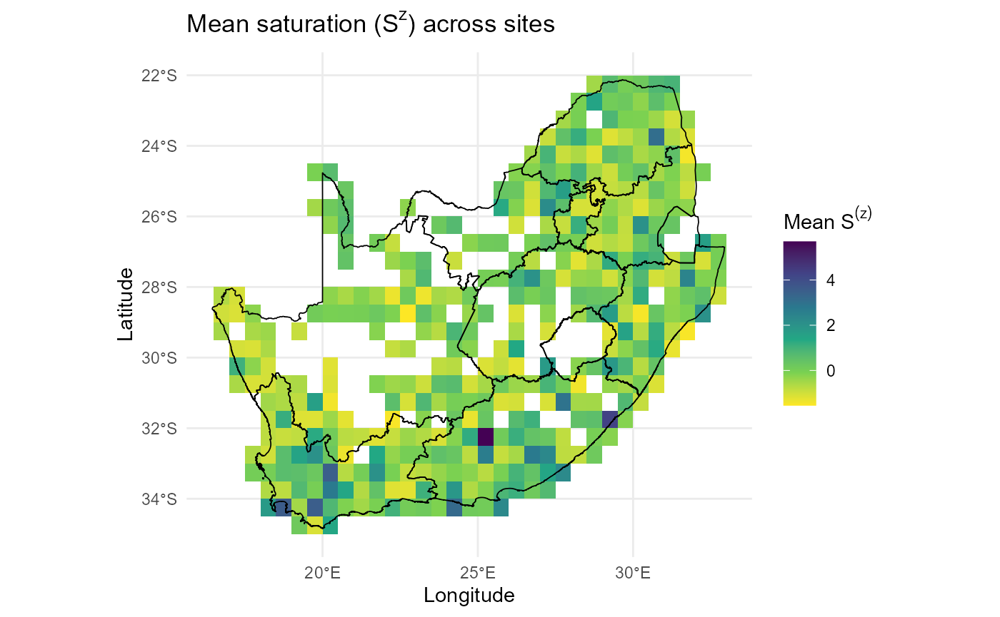
:chart_with_upwards_trend: Figures 10: The map shows the mean saturation term (\(S^{(z)}\)) across sites in South Africa, calculated from the relative abundance structure of resident communities. Warmer colours (yellow) indicate sites with low saturation values, suggesting lower levels of resident dominance, whereas cooler colours (green to purple) highlight sites with higher saturation, where resident communities are dense and strongly filled. The pattern is heterogeneous: several regions, including the south-western Cape and parts of the interior plateau, show pronounced hotspots of high saturation, while coastal and northern areas are more lightly saturated. This map is an important diagnostic for the site saturation predictor in the invasion fitness framework. Areas of high \(S^{(z)}\) reflect environments where invaders are expected to experience stronger suppression from resident dominance, regardless of their trait alignment. Conversely, low-saturation sites highlight potential windows of opportunity where invaders may establish more easily if abiotic suitability and trait differences align.
:zap: In practice, visualising \(S^{(z)}\) confirms both the spatial scaling of the predictor and the ecological plausibility of hotspots, ensuring that subsequent invasion fitness calculations are grounded in realistic community saturation patterns.
:sparkles: Overall importance: This step produces resident-only, site-comparable predictors that define the scale on which invaders will be evaluated.
:bulb: Summary. You now have \(r^{(z)}_{js}\), \(C^{(z)}_{js}\), and \(S^{(z)}_{js}\) with resident moments saved for invader scaling.
Learn trait- and site-varying sensitivities (\(\alpha, \beta, \Gamma/\gamma\))
learn_sensitivities() fits an auxiliary GLMM to relate
\(r^{(z)}, C^{(z)}, S^{(z)}\) to
positions in trait space, deriving trait-varying sensitivities and
optional site-varying slopes from random-slope components.
:hourglass_flowing_sand: What the wrapper does (step-by-step):
- Builds a long residents table with \((\mathrm{tr1},\mathrm{tr2})\),
- Fits interactions between predictors and the trait plane,
- Extracts slopes to compute \(\alpha_i\), \(\beta_i\) (signed optional), \(\theta_i\),
- Applies a test for trait-varying \(\gamma\) (Wald by default; likelihood-ratio test (LRT) optional), and
- (optionally) Combines site random slopes to produce \(\alpha_{is}\) and \(\Gamma_{is}\).
Auxiliary residents-only model on standardised predictors
fit_auxiliary_residents_glmm() estimates how slopes on
\(r^{(z)}, C^{(z)}, S^{(z)}\) vary with
\((\mathrm{tr1},\mathrm{tr2})\).
:hourglass_flowing_sand: Step-by-step: It creates
one row per site × resident ➔ adds predictors and trait coordinates ➔
fits interactions (r_z + C_z + S_z) × (tr1 + tr2) with
(1|site) + (1|species) and optional site random slopes for
r_z and C_z.
:information_source: Why this matters: The fitted slope systems underpin trait-varying and site-varying sensitivities for invasion fitness.
:warning: Checks/tips: Ensure \((\mathrm{tr1},\mathrm{tr2})\) come from the
same PCoA used elsewhere; keep re.form = NA when
predicting; avoid slopes on site-only S_z.
Trait-varying sensitivities and \(\gamma\)
derive_sensitivities() parses fixed effects to compute
trait-dependent coefficients and chooses \(\gamma\) via an LRT.
:hourglass_flowing_sand: Step-by-step: It evaluates slopes at each invader’s \((\mathrm{tr1},\mathrm{tr2})\) ➔ maps crowding/saturation slopes to \(\alpha_i, \beta_i\) (or signed \(\beta\)) ➔ and returns \(\theta_0, \theta_i, \gamma_i\) with diagnostics.
:information_source: Why this matters: These parameters translate trait position into how hard crowding bites and how steep abiotic gains are.
:warning: Checks/tips: Match Q_inv
rownames and columns; inspect distributions of \(\alpha_i\) and \(\beta_i\) for degeneracy. By default, a
Wald \(\chi^2\) test is used; set
lrt = "lrt" for a likelihood-ratio test, or
lrt = "none" to skip testing.
Site-varying penalties and slopes \(\alpha_{is}\) and \(\Gamma_{is}\)
site_varying_alpha_beta_gamma() combines trait-varying
slopes with site random-slope deviations to form site×invader versions
where appropriate.
:hourglass_flowing_sand: Step-by-step: It sums fixed
and random-slope parts for C_z and r_z ➔
clamps \(\alpha_{is} \ge 0\) ➔ and
returns tidy tables for heatmaps and summaries.
:information_source: Why this matters: Site heterogeneity modulates how universal or local the inferred penalties and gains are.
:warning: Checks/tips: Include
(0 + C_z || site) and optionally
(0 + r_z || site) in the auxiliary model; weak random-slope
variance implies little site variation.
:zap: Run learn_sensitivities() to fit
the auxiliary model, derive trait- and site-varying sensitivities, and
attach them to fit$sensitivities.
# try(source("D:/Methods/R/myR_Packages/b-cubed-versions/invasimapr/R/learn_sensitivities.R"), silent = TRUE)
# if (!exists("learn_sensitivities")) stop("learn_sensitivities() not found.")
fit = learn_sensitivities(
fit,
use_site_random_slopes = TRUE,
lrt = TRUE
)
str(fit$sensitivities, 1)
#> List of 26
#> $ fit_coeffs :List of 7
#> ..- attr(*, "class")= chr "glmmTMB"
#> $ data_used : tibble [11,205 × 8] (S3: tbl_df/tbl/data.frame)
#> $ formula :Class 'formula' language log1p(abundance) ~ (r_z + C_z + S_z) * (tr1 + tr2) + (1 | species) + (1 | site) + (0 + r_z || site) + (0 + C_z || site)
#> .. ..- attr(*, ".Environment")=<environment: 0x000002ec68558dc8>
#> $ alpha_i : Named num [1:10] 0.982 0.964 0.973 0.981 0.937 ...
#> ..- attr(*, "names")= chr [1:10] "inv1" "inv2" "inv3" "inv4" ...
#> $ alpha_signed_i : Named num [1:10] 0.982 0.964 0.973 0.981 0.937 ...
#> ..- attr(*, "names")= chr [1:10] "inv1" "inv2" "inv3" "inv4" ...
#> $ beta_i : Named num [1:10] 0.0883 0.0695 0.0833 0.0925 0.045 ...
#> ..- attr(*, "names")= chr [1:10] "inv1" "inv2" "inv3" "inv4" ...
#> $ beta_signed_i : Named num [1:10] -0.0883 -0.0695 -0.0833 -0.0925 -0.045 ...
#> ..- attr(*, "names")= chr [1:10] "inv1" "inv2" "inv3" "inv4" ...
#> $ theta0 : num 0.213
#> $ theta_i : Named num [1:10] 0.231 0.21 0.233 0.245 0.192 ...
#> ..- attr(*, "names")= chr [1:10] "inv1" "inv2" "inv3" "inv4" ...
#> $ gamma_i : Named num [1:10] 0.213 0.213 0.213 0.213 0.213 ...
#> ..- attr(*, "names")= chr [1:10] "inv1" "inv2" "inv3" "inv4" ...
#> $ wald_lrt :'data.frame': 1 obs. of 4 variables:
#> $ sens_df :'data.frame': 10 obs. of 13 variables:
#> $ clamp_summary :List of 5
#> $ prior_note : chr "Biotic effects are modelled as nonnegative penalties; positive learned slopes are reported but not used to increase lambda."
#> $ site_alpha_beta_gamma:List of 12
#> $ alpha_is : num [1:415, 1:10] 0.982 0.982 0.982 0.982 0.982 ...
#> ..- attr(*, "dimnames")=List of 2
#> $ Gamma_is : num [1:415, 1:10] 0.231 0.231 0.231 0.231 0.231 ...
#> ..- attr(*, "dimnames")=List of 2
#> $ site_alpha :List of 4
#> $ site_gamma :List of 4
#> $ a0 : num -0.96
#> $ a1 : num -0.0226
#> $ a2 : num 0.11
#> $ b0 : num -0.0675
#> $ b1 : num -0.0447
#> $ b2 : num 0.108
#> $ abg_df :'data.frame': 4150 obs. of 12 variables:
alpha_i = fit$sensitivities$alpha_i
beta_i = fit$sensitivities$beta_i
beta_signed_i = fit$sensitivities$beta_signed_i
theta0 = fit$sensitivities$theta0
theta_i = fit$sensitivities$theta_i
gamma_i = fit$sensitivities$gamma_i
alpha_is = fit$sensitivities$alpha_is
Gamma_is = fit$sensitivities$Gamma_is
sens_df = fit$sensitivities$sens_df
abg_df = fit$sensitivities$abg_df
head(sens_df[1:4,1:4]); head(abg_df[1:4,1:4])
#> invader tr1 tr2 slope_C_i
#> 1 inv1 -0.03366963 -0.20651611 -0.9815948
#> 2 inv2 -0.09911835 -0.05940586 -0.9639289
#> 3 inv3 0.11449719 -0.09846095 -0.9730468
#> 4 inv4 0.19113440 -0.15252673 -0.9807258
#> site invader alpha_is SLOPE_C_is
#> 1 82 inv1 0.9815948 -0.9815948
#> 2 83 inv1 0.9815948 -0.9815948
#> 3 84 inv1 0.9815948 -0.9815948
#> 4 117 inv1 0.9815948 -0.9815948:bar_chart: Heatmaps of \(\alpha_{is}\) and \(\Gamma_{is}\) that reveal spatial heterogeneity and barplots that summarise mean effects across invaders.
ggplot2::ggplot(abg_df, ggplot2::aes(invader, site, fill = alpha_is)) +
ggplot2::geom_tile() + ggplot2::scale_fill_viridis_c(name = expression(alpha[is])) +
ggplot2::labs(title = expression("Site-varying " * alpha[is]),
x = "Invader", y = "Site") + ggplot2::theme_minimal(base_size = 11) +
ggplot2::theme(axis.text.x = ggplot2::element_text(angle = 90, vjust = 0.5))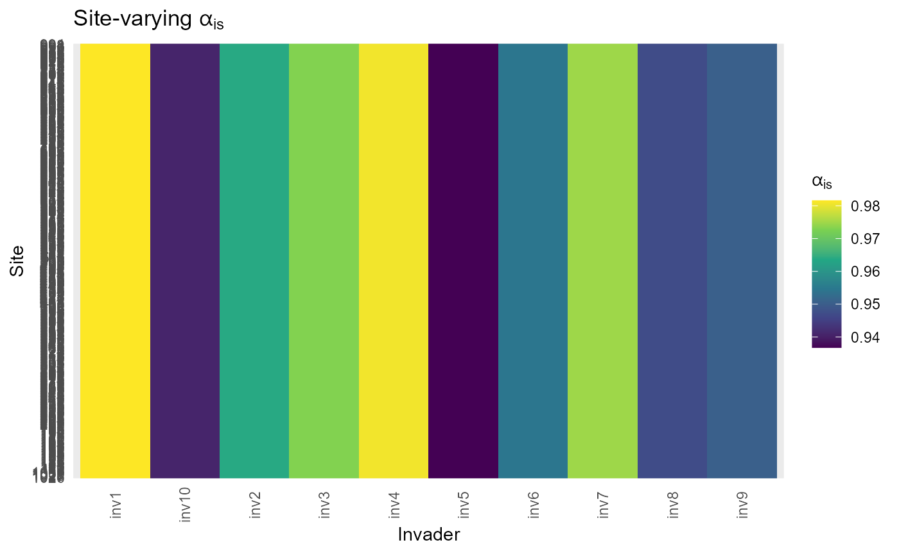
:chart_with_upwards_trend: Figure 11: The heatmaps show how sensitivity to crowding (\(\alpha_{is}\)) varies across sites and invaders. Each column corresponds to an invader, each row to a site, and the colour scale represents the parameter value. Here, \(\alpha_{is}\) values are consistently positive but display subtle gradients across sites, indicating that some environments impose stronger penalties from trait overlap than others. This heterogeneity reflects local differences in how resident communities constrain invaders: higher \(\alpha_{is}\) (yellow-green) means stronger crowding effects, while lower values (blue-purple) suggest weaker suppression.
ggplot2::ggplot(abg_df, ggplot2::aes(invader, site, fill = Gamma_is)) +
ggplot2::geom_tile() +
ggplot2::scale_fill_viridis_c(name = expression(Gamma[is])) +
ggplot2::labs(title = expression("Site-varying " * Gamma[is]),
x = "Invader", y = "Site") + ggplot2::theme_minimal(base_size = 11) +
ggplot2::theme(axis.text.x = ggplot2::element_text(angle = 90, vjust = 0.5))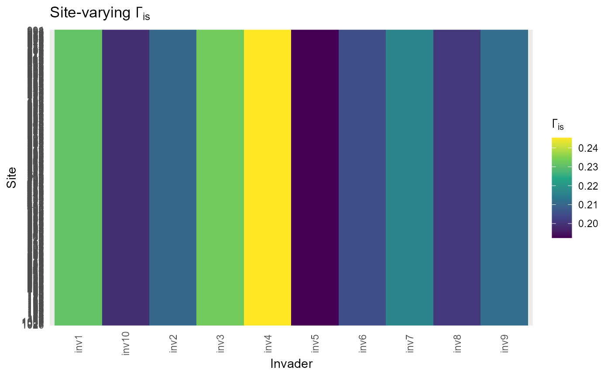
:chart_with_upwards_trend: Figure 12: The heatmaps show how sensitivity to abiotic scaling (\(\Gamma_{is}\), second) varies across sites and invaders.Each column corresponds to an invader, each row to a site, and the colour scale represents the parameter value. Here, \(\Gamma_{is}\) values describe how abiotic suitability scales for each invader–site combination. Most values fall near zero to moderate positive ranges, but some sites show locally elevated \(\Gamma_{is}\), highlighting environments where abiotic alignment disproportionately boosts invasion fitness.
:bar_chart: Together, the plots above confirm that invasion fitness is shaped by site-specific interactions: even with the same trait predictors, the balance between abiotic suitability and crowding penalties varies geographically. This heterogeneity is crucial for interpreting invasion outcomes, since invaders may thrive in sites where abiotic boosts outweigh crowding, while failing elsewhere despite similar trait distances.
:sparkles: Overall importance: These sensitivities are the coefficients that connect predictors to invasion fitness in flexible ways (constant, trait-varying, site-varying).
:bulb: Summary. You now have \(\alpha_i\), \(\beta_i\) (and optional signed), \(\theta_i\) and \(\gamma_i\), plus \(\alpha_{is}\), \(\Gamma_{is}\) where random slopes support site variation.
Invader predictors \(r^{(z)}_{is}, C^{(z)}_{is}, S^{(z)}_{is}\)
predict_invaders() builds invader-side pillars on the
resident scale using the residents GLMM, trait
geometry, and resident moments.
:hourglass_flowing_sand: Step-by-step
predict_invaders():
- Predicts invader \(r_{is}\) from fixed effects;
- Standardises by resident site moments;
- Computes invader-resident distances and kernels to obtain \(C_{is}\);
- Standardises by resident moments;
- Broadcasts \(S^{(z)}_s\) to \(S^{(z)}_{is}\).
:zap: Run predict_invaders() to produce
invader predictor matrices and tidy frames, aligning invaders directly
to residents’ scales to avoid leakage.
# try(source("D:/Methods/R/myR_Packages/b-cubed-versions/invasimapr/R/predict_invaders.R"), silent = TRUE)
# if (!exists("predict_invaders")) stop("predict_invaders() not found.")
fit = predict_invaders(fit, traits_inv)
# str(fit$invaders, 1)
r_is = fit$invaders$r_is
r_is_z = fit$invaders$r_is_z
C_is = fit$invaders$C_is
C_is_z = fit$invaders$C_is_z
S_is_z = fit$invaders$S_is_z
inv_predict_df = fit$invaders$df
summary(inv_predict_df)
#> site invader r_link r_z
#> 82 : 10 Length:4150 Min. :-1.9422 Min. :-8.447911
#> 83 : 10 Class :character 1st Qu.: 0.6978 1st Qu.:-0.830539
#> 84 : 10 Mode :character Median : 1.2211 Median : 0.136880
#> 117 : 10 Mean : 1.1506 Mean :-0.008854
#> 118 : 10 3rd Qu.: 1.6929 3rd Qu.: 0.993591
#> 119 : 10 Max. : 3.6457 Max. : 6.559607
#> (Other):4090
#> C_z S_z
#> Min. :-1.0035 Min. :-1.5449
#> 1st Qu.: 0.5128 1st Qu.:-0.7173
#> Median : 0.9441 Median :-0.1541
#> Mean : 0.9597 Mean : 0.0000
#> 3rd Qu.: 1.3796 3rd Qu.: 0.4529
#> Max. : 3.3913 Max. : 5.6963
#> :bar_chart: Site maps of mean \(r^{(z)}\) and mean \(C^{(z)}\) across invaders that reveal abiotic opportunity versus biotic pressure patterns.
stopifnot(exists("site_df"))
df_r_site = inv_predict_df |>
dplyr::group_by(site) |>
dplyr::mutate(mean_r_z = mean(r_z)) |>
dplyr::left_join(site_df, by = "site")
ggplot2::ggplot(df_r_site, ggplot2::aes(x, y, fill = mean_r_z)) +
ggplot2::geom_tile() +
ggplot2::scale_fill_gradient2(name = expression(Mean~r^{(z)}), midpoint = 0) +
ggplot2::labs(title = expression("Abiotic suitability " * r^{(z)} * " (site mean across invaders)"),
x = "x", y = "y") +
ggplot2::theme_minimal() +
ggplot2::geom_sf(data = rsa, inherit.aes = FALSE, fill = NA, color = "black", size = 0.3)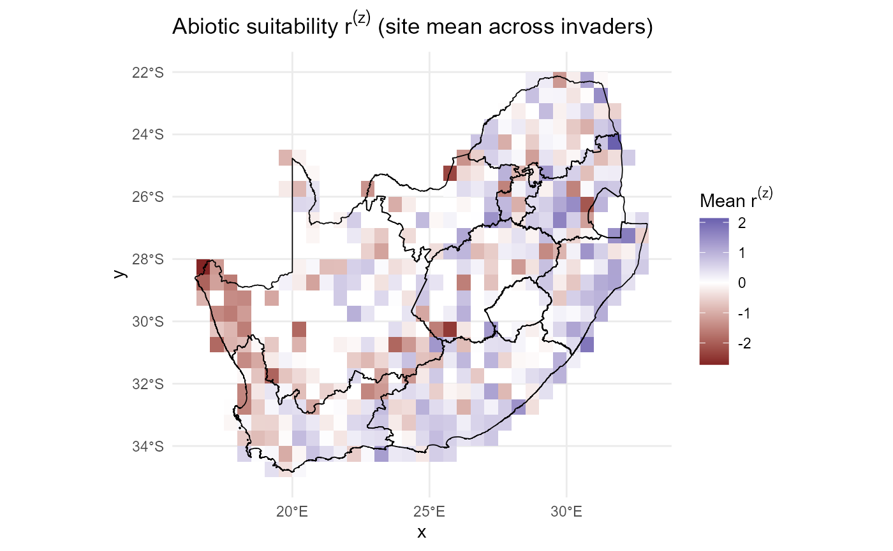
:chart_with_upwards_trend: Figure 13: This map summarises how Abiotic Suitability (\(r^{(z)}\)) co-varies across space, averaged over all invaders. Here, the colours reflect the mean abiotic suitability that invaders experience per site. Warmer red tones indicate lower or even negative suitability, while cooler blue tones show higher suitability. The spatial gradients capture regions where abiotic conditions consistently favour or hinder invasion potential.
stopifnot(exists("site_df"))
df_C_site = inv_predict_df |>
dplyr::group_by(site) |>
dplyr::mutate(mean_C_z = mean(C_z)) |>
dplyr::left_join(site_df, by = "site")
ggplot2::ggplot(df_C_site, ggplot2::aes(x, y, fill = mean_C_z)) +
ggplot2::geom_tile() +
ggplot2::scale_fill_viridis_c(name = expression(Mean~C^{(z)}), direction = 1) +
ggplot2::labs(
title = expression("Trait-similar crowding " * C^{(z)} * " (site mean across invaders)"),
x = "x", y = "y"
) +
ggplot2::theme_minimal() +
ggplot2::geom_sf(data = rsa, inherit.aes = FALSE, fill = NA, color = "black", size = 0.3)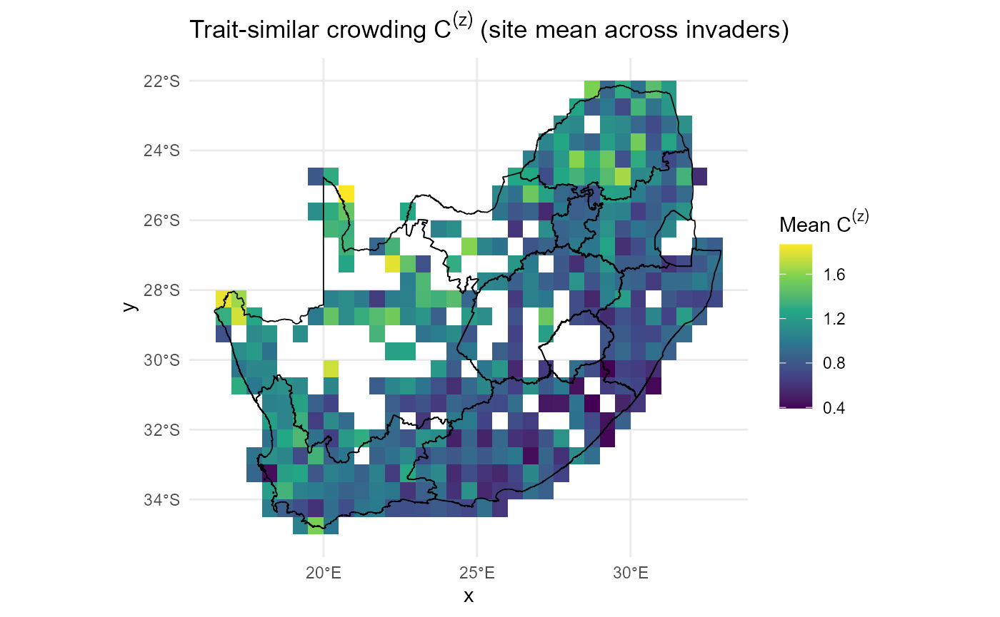
:chart_with_upwards_trend: Figure 14: This map summarises how Trait-similar Crowding (\(C^{(z)}\)) or biotic pressure co-varies across space, averaged over all invaders. Here, the colours represent the average intensity of biotic pressure from resident communities, scaled by trait similarity. Higher values (yellow-green) highlight areas where residents are more functionally similar to potential invaders, thus exerting stronger competitive exclusion. Lower values (blue-purple) identify sites where invaders may face less trait-overlap pressure.
:bar_chart: Together, these maps provide a spatial lens on the trade-off between abiotic opportunity and biotic resistance: invasion is more likely where \(r^{(z)}\) is high and \(C^{(z)}\) is low, and less likely where the opposite holds.
:sparkles: Overall importance: Invader predictors are now on the same within-site scales as residents, enabling apples-to-apples fitness calculations.
:bulb: Summary. You now have \(r^{(z)}_{is}\), \(C^{(z)}_{is}\), \(S^{(z)}_{is}\) aligned to resident moments and ready for \(\lambda\).
Invasion fitness (\(\lambda\)) and establishment probability (\(P\))
predict_establishment() combines invader predictors with
sensitivities under a set of options (A-E) and maps \(\lambda\) to probabilities with
probit/logit/hard rules.
:hourglass_flowing_sand: Step-by-step
predict_establishment():
- Selects coefficients (constant, trait-varying, site-varying),
- optionally calibrates a resident baseline,
- computes \(\lambda_{is}\), and transforms to \(P_{is}\).
- Finally, it returns matrices plus tidy long frames and optional plots.
:zap: Run predict_establishment() to
produce \(\lambda\) and \(P\) surfaces for chosen options, with maps
and ranks for rapid review.
library(ggplot2) # ensures waiver() exists
# try(source("D:/Methods/R/myR_Packages/b-cubed-versions/invasimapr/R/predict_establishment.R"), silent = TRUE)
# if (!exists("predict_establishment")) stop("predict_establishment() not found.")
fit = predict_establishment(
fit,
option = "A", # try "A"..."E"
prob_method = "hard", # "probit", "logit", or "hard"
prob_scale = list(sigma = 1),
calibrate_kappa = TRUE,
boundary_sf = rsa
)
str(fit,1)
#> List of 11
#> $ inputs :List of 13
#> $ meta :List of 7
#> $ inputs_std :List of 2
#> $ traits :List of 10
#> $ crowding :List of 5
#> $ model :List of 7
#> $ residents :List of 16
#> $ sensitivities:List of 26
#> $ invaders :List of 6
#> $ fitness :List of 7
#> $ prob :List of 7
#> - attr(*, "class")= chr [1:2] "invasimapr_fit" "list"
# str(fit$fitness, 1)
# str(fit$prob, 1)
lambda_is = fit$fitness$lambda_is
p_is = fit$prob$p_is
# fit_lambda = fit$fitness$lambda_long:bar_chart: Overall mean \(\lambda\) maps that summarise openness, probability heatmaps and per-invader faceted maps reveal where and for whom establishment is likely.
if (!is.null(fit$prob$plots$heatmap)) fit$prob$plots$heatmap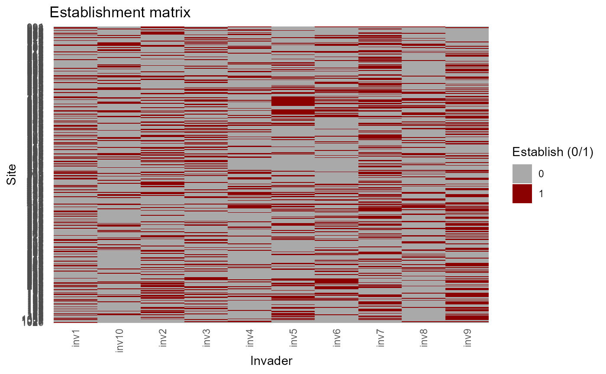
:chart_with_upwards_trend: Figure 15: This figure illustrates the spatial and invader-specific structure of establishment likelihood. Rows correspond to sites and columns to invaders, with cells showing binary establishment outcomes. The sparse but structured pattern of yellow cells (successful establishment) indicates that invasion is not uniform but instead constrained by both species identity and site context.
# str(fit$prob$plots, 1)
if (!is.null(fit$prob$plots$site_mean)) fit$prob$plots$site_mean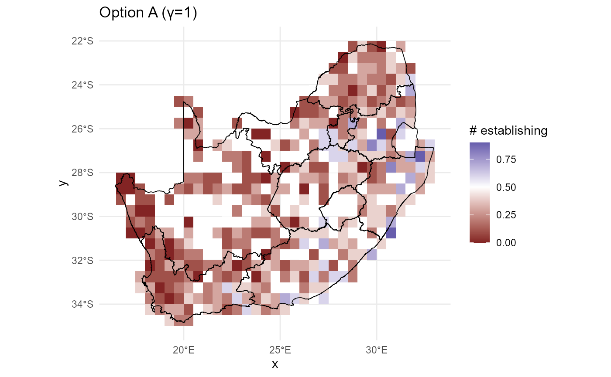
:chart_with_upwards_trend: Figure 16: Spatial pattern of establishment under Option A (\(\gamma\) = 1). Tiles show the number/proportion of species establishing per grid cell (“# establishing”), from low (brown) to high (blue), over South Africa’s boundaries.
# str(fit$prob$plots, 1)
if (!is.null(fit$prob$plots$invader_mean)) fit$prob$plots$invader_mean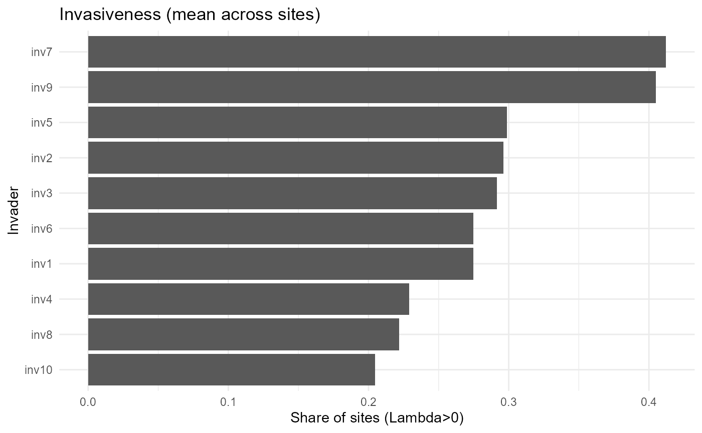
:chart_with_upwards_trend: Figure 17: Invasiveness ranking by invader. Bars show the mean fraction of sites where intrinsic growth is positive (\(\lambda\) > 0) for each invader, averaged across all sites and ordered from highest (more invasive; e.g., inv7, inv9) to lowest (e.g., inv10).
ggplot2::ggplot(fitness_df, ggplot2::aes(x, y, fill = lambda_mean)) +
ggplot2::geom_tile() +
ggplot2::scale_fill_gradient2(name = "Mean lambda", midpoint = -1.707) +
ggplot2::geom_sf(data = rsa, inherit.aes = FALSE, fill = NA, color = "black", size = 0.3) +
ggplot2::labs(title = fitness_df$option, x = "x", y = "y") +
ggplot2::theme_minimal()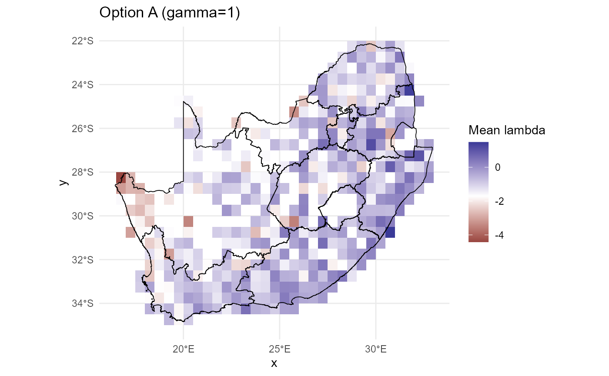
:chart_with_upwards_trend: Figure 18: This figures illustrates the spatial and invader-specific structure of establishment likelihood. Mean \(\lambda\) is mapped with colours reflecting the site-level mean fitness (\(\lambda\)) of invaders under option A (\(\gamma=1\)), summarising overall openness to establishment. Negative values (brown) dominate, showing that most sites are generally resistant, while scattered blue patches identify hotspots where conditions are sufficiently favourable for invader persistence.
:bar_chart: Together, the heatmap and map highlight the joint filtering effects of species identity and geography: while few invaders succeed broadly, specific site–species combinations align to permit establishment, with spatial clustering of higher openness revealing invasion-prone regions.
:sparkles: Overall importance: These outputs translate biotic and abiotic structure into explicit establishment surfaces, ready for summary and decision-support.
:bulb: Summary. You now have \(\lambda_{is}\) and \(P_{is}\) under clear assumptions (A-E), with diagnostics to choose a working specification.
Summaries: species, traits, and sites
summarise_results() distils the full \(\lambda\) or \(P\) surfaces into indicators of species
invasiveness \(V_i\), site invasibility
\(V_s\), and trait correlates, with
tidy tables and plots.
:hourglass_flowing_sand: Step-by-step
summarise_results():
- Computes \(V_i\) and \(V_s\) (hard or probabilistic),
- Ranks invaders and sites,
- Quantifies trait-fitness relationships, and
- Returns plots (e.g. maps, heatmaps, lollipop plots) and summary tables.
:zap: Run summarise_results() to
produce decision-ready summaries and figures linked back to the same
predictors and trait geometry.
# try(source("D:/Methods/R/myR_Packages/b-cubed-versions/invasimapr/R/summarise_results.R"), silent = TRUE)
# if (!exists("summarise_results")) stop("summarise_results() not found.")
fit = summarise_results(
fit,
use_probabilistic = TRUE,
make_plots = TRUE,
boundary_sf = rsa
)
str(fit, 1)
#> List of 12
#> $ inputs :List of 13
#> $ meta :List of 7
#> $ inputs_std :List of 2
#> $ traits :List of 10
#> $ crowding :List of 5
#> $ model :List of 7
#> $ residents :List of 16
#> $ sensitivities:List of 26
#> $ invaders :List of 6
#> $ fitness :List of 7
#> $ prob :List of 7
#> $ summary :List of 6
#> - attr(*, "class")= chr [1:2] "invasimapr_fit" "list"
str(fit$summary, 1)
#> List of 6
#> $ species : tibble [10 × 5] (S3: tbl_df/tbl/data.frame)
#> $ site : tibble [415 × 9] (S3: tbl_df/tbl/data.frame)
#> $ trait_effects : tibble [20 × 7] (S3: tbl_df/tbl/data.frame)
#> $ establish_long: tibble [4,150 × 8] (S3: tbl_df/tbl/data.frame)
#> $ plots :List of 4
#> $ meta :List of 3
# head(dplyr::arrange(fit$summary$species, dplyr::desc(V_i)), 10)
# head(dplyr::arrange(fit$summary$site, dplyr::desc(total_expected %||% n_est)), 10)
# fit$summary$trait_effects:bar_chart: Species & trait invasiveness and site invasibility maps
if (!is.null(fit$summary$plots$invader_rank)) fit$summary$plots$invader_rank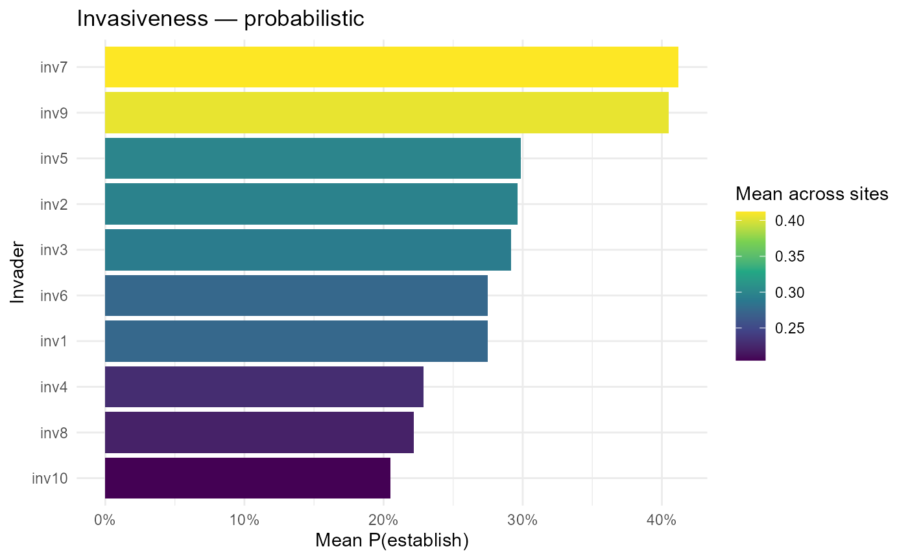
:chart_with_upwards_trend: Figure 19: Invasiveness - probabilistic view where bars show the mean probability of establishment across sites for each invader. A steep drop from the top few taxa to the remainder indicates a short “high-risk list”: a small subset of invaders (e.g., inv6–inv7) are consistently more likely to establish, while others rarely exceed low single-digit probabilities. This ranking is useful for triage and horizon scanning.
if (!is.null(fit$summary$plots$site_map)) fit$summary$plots$site_map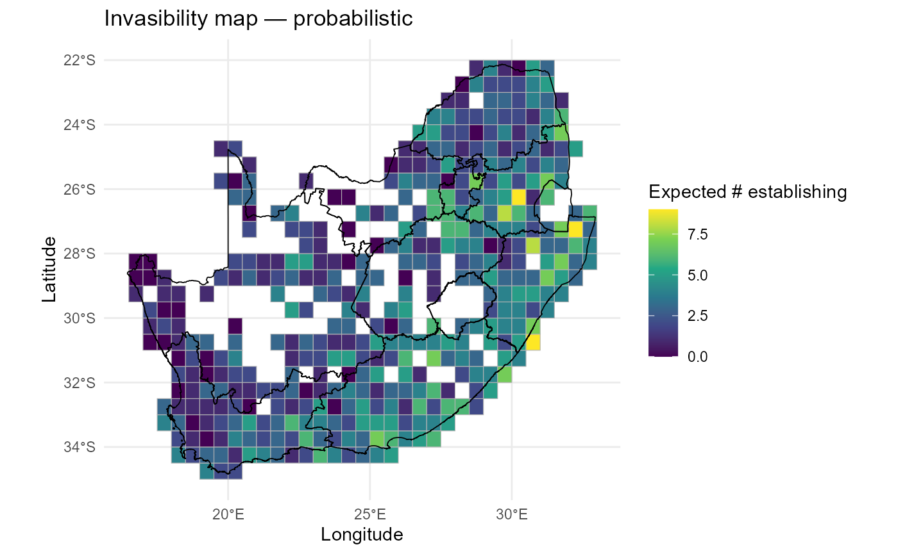
:chart_with_upwards_trend: Figure 20: Invasibility map - probabilistic view where colours map the expected number of establishing invaders per site (sum of probabilities), highlighting geographic hotspots of openness. Most of the country remains resistant (dark tones), but clusters of higher expected establishment emerge along specific regions and borders, suggesting where surveillance or rapid response capacity would yield the greatest return.
if (!is.null(fit$summary$plots$heatmap)) fit$summary$plots$heatmap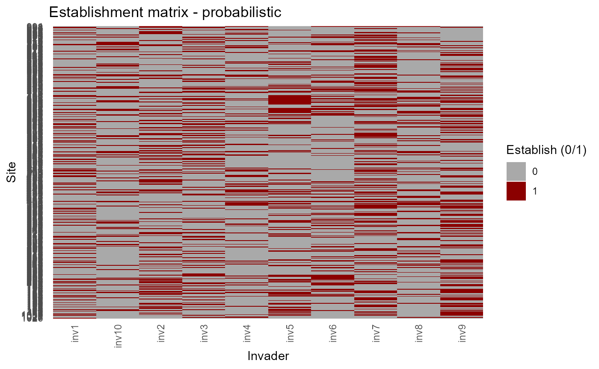
:chart_with_upwards_trend: Figure 21: Establishment matrix with binary establishment outcomes from the probabilistic model shown across sites and invaders. Rows are sites, columns are invaders; tiles show establishment (1, red) vs non-establishment (0, grey), illustrating heterogeneity among invaders and among sites.
if (!is.null(fit$summary$plots$trait_effects)) fit$summary$plots$trait_effects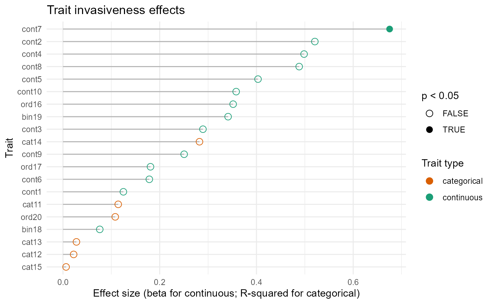
:chart_with_upwards_trend: Figure 22: Trait invasiveness effects view with a lollipop plot ranks traits by their association with mean establishment probability (|β| for continuous traits; ANOVA \(R^2\) for categorical/ordinal). A small set of continuous traits dominate the signal (right side, several with \(p<0.05\)), implying that functional axes captured by those traits systematically raise or lower invasion success. Categorical/ordinal traits contribute more modestly, pointing to ecologically relevant but weaker thresholds or syndromes.
:bar_chart: A few invaders and a few trait axes drive most risk, and their success concentrates in identifiable regions. This combination, who, why, and where, provides a clear basis for prioritising monitoring, pathway management, and site-level mitigation. Ranked bars highlight consistently risky invaders; site maps show hotspots of openness; heatmaps reveal joint structure; trait lollipops identify functional correlates.
:sparkles: Overall importance: These summaries compress high-dimensional predictions into interpretable priorities for surveillance and management.
:bulb: Summary. You now have species ranks \(V_i\), site maps \(V_s\), and trait effect sizes - linked transparently to the earlier geometry, predictors, and sensitivities.
# # 1) Count of all val==1 by site (heatmap)
# site_counts = fit$summary$establish_long |>
# group_by(site, x, y) |>
# summarise(n_val1 = sum(val == 1L, na.rm = TRUE),
# p_val1 = (sum(val == 1L, na.rm = TRUE)/length(unique(fit$summary$establish_long$invader)))*100, .groups = "drop")
# head(site_counts)
#
# p_count = ggplot2::ggplot(site_counts, ggplot2::aes(x, y, fill = n_val1)) +
# ggplot2::geom_tile() +
# ggplot2::coord_equal() +
# ggplot2::scale_fill_viridis_c(name = "# invaders with val = 1", option = "C") +
# ggplot2::geom_sf(data = rsa, inherit.aes = FALSE, fill = NA, color = "black", size = 0.35) +
# ggplot2::labs(title = "Count of val = 1 by site", x = "Longitude", y = "Latitude") +
# ggplot2::theme_minimal(base_size = 12)
# print(p_count)
# p_prop = ggplot2::ggplot(site_counts, ggplot2::aes(x, y, fill = p_val1)) +
# ggplot2::geom_tile() +
# ggplot2::coord_equal() +
# ggplot2::scale_fill_viridis_c(name = "% invaders with val = 1", option = "C") +
# ggplot2::geom_sf(data = rsa, inherit.aes = FALSE, fill = NA, color = "black", size = 0.35) +
# ggplot2::labs(title = "% of val = 1 by site", x = "Longitude", y = "Latitude") +
# ggplot2::theme_minimal(base_size = 12)
# print(p_prop)
# 2) Separate maps per invader: val=1 red, val=0 dark grey
df_inv = fit$summary$establish_long |>
dplyr::mutate(val_f = factor(val, levels = c(0, 1)))
p_facets = ggplot2::ggplot(df_inv, ggplot2::aes(x, y, fill = val_f)) +
ggplot2::geom_tile() +
ggplot2::coord_equal() +
ggplot2::scale_fill_manual(
values = c(`0` = "grey20", `1` = "#d7301f"),
labels = c(`0` = "0", `1` = "1"),
name = "val"
) +
ggplot2::facet_wrap(~ invader, ncol = 5) +
ggplot2::geom_sf(data = rsa, inherit.aes = FALSE, fill = NA, color = "black", size = 0.35) +
labs(title = "Per-invader maps (val = 1 in red, val = 0 in dark grey)",
x = "Longitude", y = "Latitude") +
ggplot2::theme_minimal(base_size = 12) +
ggplot2::theme(axis.text.x = ggplot2::element_blank(),
axis.text.y = ggplot2::element_blank())
print(p_facets)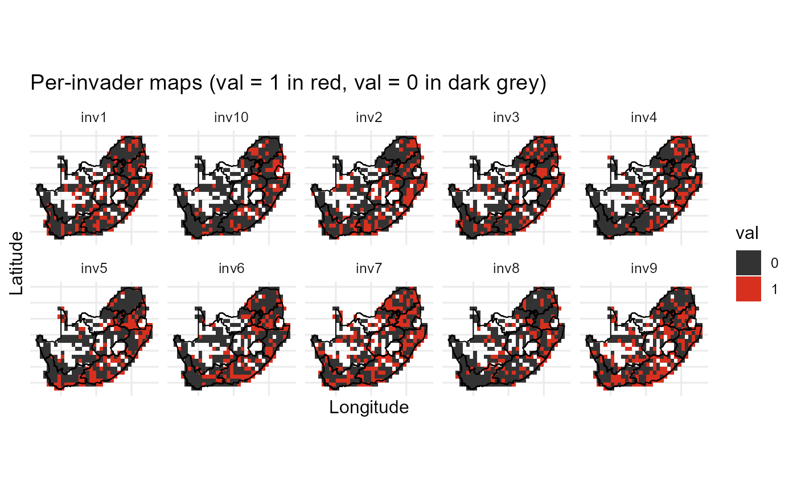
:chart_with_upwards_trend: Figure 23: Per-invader maps of binary establishment across South Africa. Each panel is one invader; red cells indicate establishment (1) and dark grey non-establishment (0). Common grid and coastline enable direct comparison of spatial patterns among invaders.
Common pitfalls & quick fixes
Final guardrails for robust runs and reproducibility.
- Name alignment. All site-indexed matrices use identical rownames; community columns match trait rownames.
- Hull stability. Use ≥3 residents; otherwise centrality/hull diagnostics may be skipped.
- Standardisation leakage. Scale invaders using resident moments only.
-
Prediction scale. Use fixed-effects predictions
(
re.form = NA) for both residents and invaders. -
Saturation slopes. Do not add
(0 + S_z || site);S_zhas no within-site variation.
Session information
sessionInfo()
#> R version 4.5.2 (2025-10-31 ucrt)
#> Platform: x86_64-w64-mingw32/x64
#> Running under: Windows 11 x64 (build 26200)
#>
#> Matrix products: default
#> LAPACK version 3.12.1
#>
#> locale:
#> [1] LC_COLLATE=English_South Africa.utf8 LC_CTYPE=English_South Africa.utf8
#> [3] LC_MONETARY=English_South Africa.utf8 LC_NUMERIC=C
#> [5] LC_TIME=English_South Africa.utf8
#>
#> time zone: Africa/Johannesburg
#> tzcode source: internal
#>
#> attached base packages:
#> [1] stats graphics grDevices utils datasets methods base
#>
#> other attached packages:
#> [1] ggplot2_4.0.0 dissmapr_0.1.0 invasimapr_0.1.0
#>
#> loaded via a namespace (and not attached):
#> [1] splines_4.5.2 fields_16.3.1 tibble_3.3.1
#> [4] hardhat_1.4.2 pROC_1.19.0.1 rpart_4.1.24
#> [7] factoextra_1.0.7 lifecycle_1.0.5 Rdpack_2.6.4
#> [10] sf_1.0-21 rstatix_0.7.2 globals_0.18.0
#> [13] lattice_0.22-7 MASS_7.3-65 NbClust_3.0.1
#> [16] dendextend_1.19.1 backports_1.5.0 magrittr_2.0.4
#> [19] sass_0.4.10 rmarkdown_2.29 jquerylib_0.1.4
#> [22] yaml_2.3.12 otel_0.2.0 spam_2.11-1
#> [25] sp_2.2-0 pbapply_1.7-4 DBI_1.2.3
#> [28] minqa_1.2.8 RColorBrewer_1.1-3 lubridate_1.9.4
#> [31] abind_1.4-8 multcomp_1.4-28 maps_3.4.3
#> [34] rvest_1.0.5 glmmTMB_1.1.11 purrr_1.2.0
#> [37] nnet_7.3-20 TH.data_1.1-4 sandwich_3.1-1
#> [40] ipred_0.9-15 lava_1.8.1 ggrepel_0.9.6
#> [43] listenv_0.9.1 terra_1.8-54 pheatmap_1.0.13
#> [46] vegan_2.7-1 units_0.8-7 parallelly_1.45.1
#> [49] pkgdown_2.1.3 permute_0.9-8 codetools_0.2-20
#> [52] xml2_1.4.0 tidyselect_1.2.1 clValid_0.7
#> [55] farver_2.1.2 lme4_1.1-37 viridis_0.6.5
#> [58] matrixStats_1.5.0 stats4_4.5.2 jsonlite_2.0.0
#> [61] caret_7.0-1 e1071_1.7-16 Formula_1.2-5
#> [64] survival_3.8-3 iterators_1.0.14 emmeans_1.11.2-8
#> [67] systemfonts_1.2.3 foreach_1.5.2 geodata_0.6-2
#> [70] tools_4.5.2 ragg_1.5.0 stringdist_0.9.15
#> [73] Rcpp_1.1.0 glue_1.8.0 prodlim_2025.04.28
#> [76] gridExtra_2.3 xfun_0.56 mgcv_1.9-3
#> [79] dplyr_1.1.4 scam_1.2-19 withr_3.0.2
#> [82] numDeriv_2016.8-1.1 fastmap_1.2.0 boot_1.3-32
#> [85] entropy_1.3.2 digest_0.6.37 timechange_0.3.0
#> [88] R6_2.6.1 estimability_1.5.1 textshaping_1.0.3
#> [91] wk_0.9.4 fuzzyjoin_0.1.6.1 utf8_1.2.6
#> [94] tidyr_1.3.1 generics_0.1.4 data.table_1.18.0
#> [97] recipes_1.3.1 class_7.3-23 httr_1.4.7
#> [100] htmlwidgets_1.6.4 ModelMetrics_1.2.2.2 pkgconfig_2.0.3
#> [103] gtable_0.3.6 timeDate_4041.110 S7_0.2.0
#> [106] selectr_0.4-2 htmltools_0.5.8.1 carData_3.0-5
#> [109] dotCall64_1.2 TMB_1.9.17 scales_1.4.0
#> [112] gower_1.0.2 reformulas_0.4.2 corrplot_0.95
#> [115] knitr_1.51 rstudioapi_0.17.1 geosphere_1.5-20
#> [118] reshape2_1.4.4 coda_0.19-4.1 nlme_3.1-168
#> [121] curl_7.0.0 nloptr_2.2.1 zetadiv_1.3.0
#> [124] proxy_0.4-27 cachem_1.1.0 zoo_1.8-14
#> [127] stringr_1.6.0 KernSmooth_2.23-26 parallel_4.5.2
#> [130] desc_1.4.3 s2_1.1.9 pillar_1.11.1
#> [133] grid_4.5.2 vctrs_0.7.1 ggpubr_0.6.1
#> [136] car_3.1-3 xtable_1.8-4 cluster_2.1.8.1
#> [139] evaluate_1.0.5 magick_2.8.7 mvtnorm_1.3-3
#> [142] cli_3.6.5 compiler_4.5.2 rlang_1.1.7
#> [145] future.apply_1.20.0 ggsignif_0.6.4 labeling_0.4.3
#> [148] mclust_6.1.1 classInt_0.4-11 forcats_1.0.0
#> [151] plyr_1.8.9 fs_1.6.6 stringi_1.8.7
#> [154] viridisLite_0.4.2 Matrix_1.7-4 patchwork_1.3.2
#> [157] future_1.67.0 rbibutils_2.3 broom_1.0.10
#> [160] bslib_0.9.0